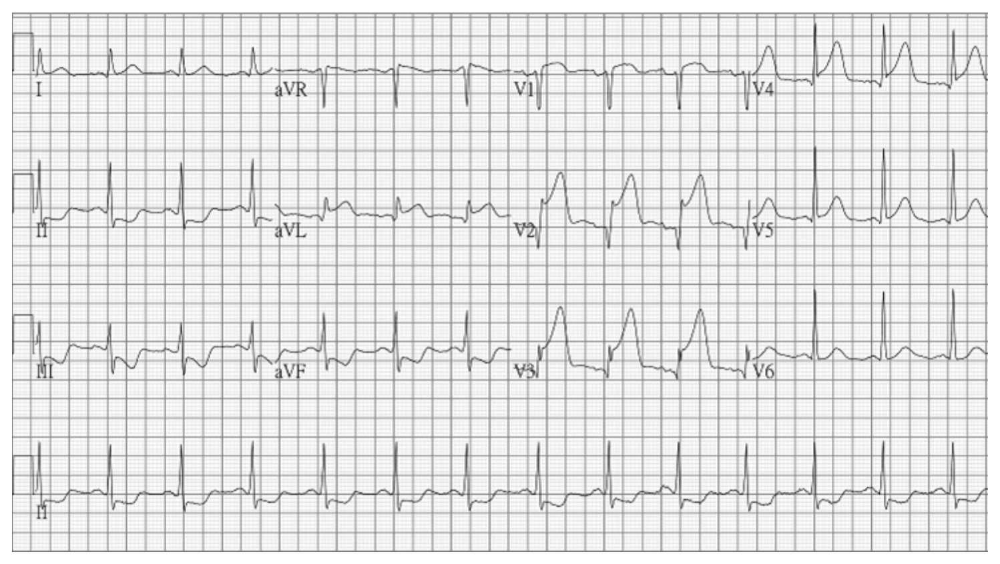
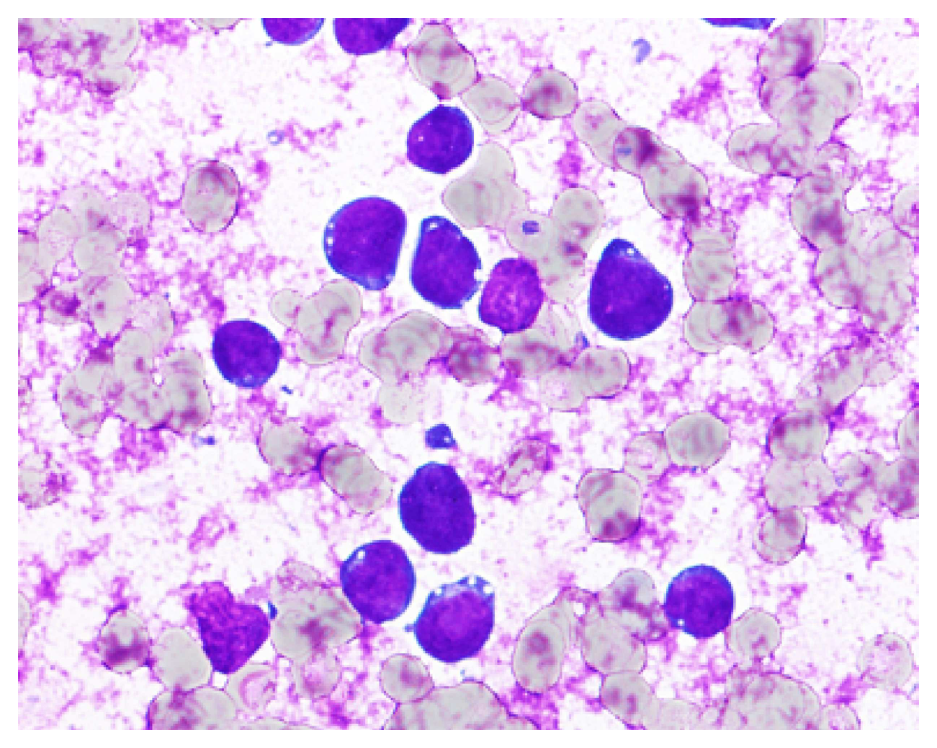
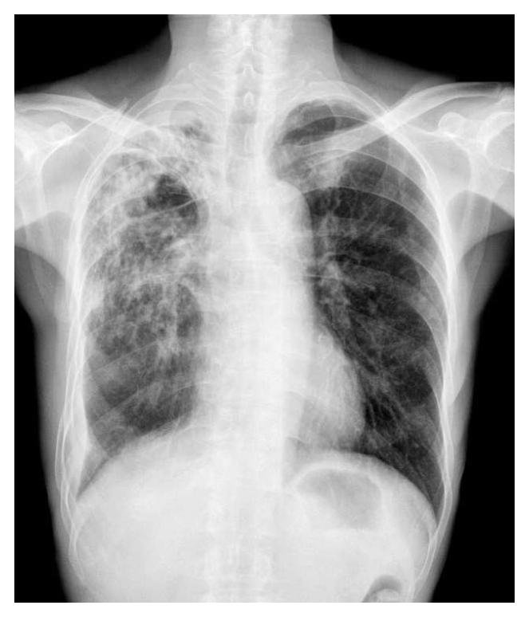
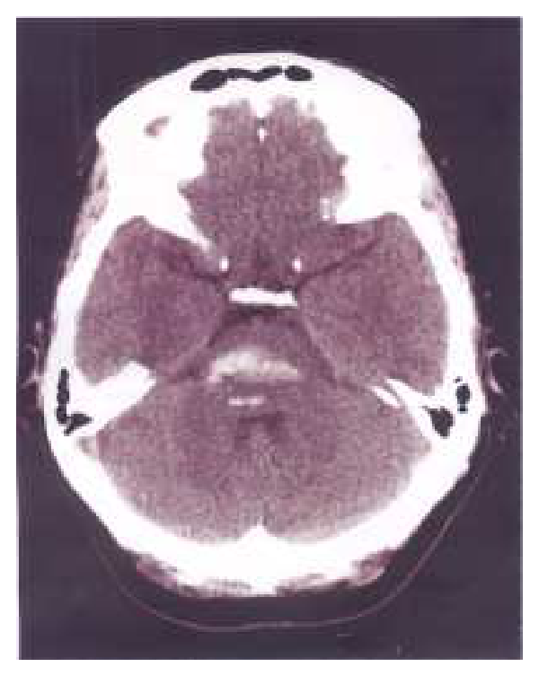
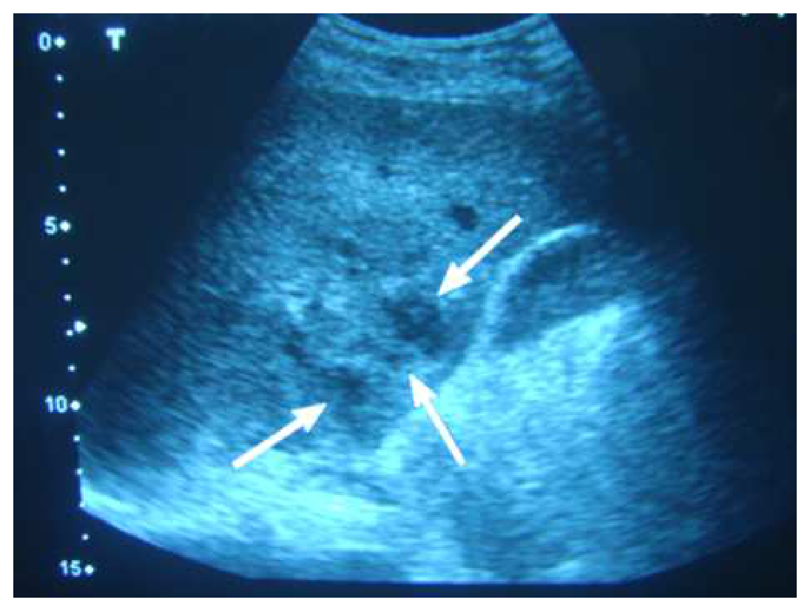

開卷有益 ／
醫師 ／ 醫學（三）（包括內科、家庭醫學科等科目及其相關臨床實例與醫學倫理） ／ 108 年第 2 次108 年第 2 次醫師醫學（三）（包括內科、家庭醫學科等科目及其相關臨床實例與醫學倫理）試題與答案
這一頁是民國 108 年第 2 次醫師醫學（三）（包括內科、家庭醫學科等科目及其相關臨床實例與醫學倫理）的整份歷屆試題，共 80 題，題目與標準答案出自考選部「國家考試試題及測驗式試題答案」開放資料，其中 80 題附有詳解。以下逐題列出題幹、選項與答案；要計時作答或記錄成績，請用線上練習。
考選部原始場次代碼：108080
線上作答這一科 →
全部 80 題
第 1 題
一位下肢水腫合併腹水的病人，血清中白蛋白（albumin）為3.0 g/dL，腹水中的白蛋白（ascitic albumin）及蛋白質總量（ascitic protein）分別為1.2及2.8 g/dL，下列何項診斷最不可能？
（A） hepatic vein thrombosis, early stage（B） heart failure（C） liver cirrhosis（D） hepatic sinusoidal obstruction syndrome答案：（C）
詳解與考點 正解：以血清－腹水白蛋白梯度判讀腹水。梯度＝血清白蛋白 3.0 g/dL－腹水白蛋白 1.2 g/dL=1.8 g/dL，屬門脈高壓型腹水；腹水總蛋白 2.8 g/dL 則偏高。肝硬化常造成門脈高壓但腹水蛋白通常較低，與本題的高蛋白腹水最不相符，故選 C。
A：早期肝靜脈血栓可造成肝後性門脈高壓，且靜脈鬱血時腹水蛋白可偏高，能解釋本題型態。
B：心衰竭造成右心鬱血與肝竇壓力上升，常見高梯度合併高蛋白腹水；它看似只屬心臟疾病，卻是此腹水組合的重要鑑別診斷。
D：肝竇阻塞症候群可導致肝內血流阻塞與門脈高壓，早期亦可能呈現高蛋白腹水，故並非最不可能。
本題考點：血清－腹水白蛋白梯度（serum-ascites albumin gradient, SAAG）——以血清白蛋白減腹水白蛋白判讀門脈高壓；腹水總蛋白（ascitic total protein）可協助區分肝硬化與心臟或肝靜脈鬱血相關腹水。
第 2 題
下列那一種藥物或狀況最不可能造成呼吸性鹼中毒？
（A） 水楊酸鹽（salicylates）（B） 高山（C） 懷孕（D） 嗎啡（morphine）答案：（D）
詳解與考點 正解：呼吸性鹼中毒的核心是肺泡過度換氣使 PaCO2 下降。嗎啡會抑制呼吸中樞，較容易造成低通氣與 CO2 滯留，方向是呼吸性酸中毒而非呼吸性鹼中毒，故選 D。
A：水楊酸鹽中毒早期可直接刺激呼吸中樞而過度換氣，因此可出現呼吸性鹼中毒；後期還可能合併代謝性酸中毒。
B：高山低氧會刺激周邊化學受器，促使過度換氣並降低 PaCO2，故可造成呼吸性鹼中毒。
C：懷孕時黃體素增加會提高呼吸驅動、使通氣增加，因此常見輕度慢性呼吸性鹼中毒。
本題考點：呼吸性鹼中毒（respiratory alkalosis）——過度換氣使 PaCO2 降低；高山低氧、懷孕與水楊酸鹽早期中毒可增加通氣，鴉片類藥物則傾向造成低通氣。
第 3 題
有關心導管檢查中各種壓力測量數據的敘述，下列何者正確？
（A） 正常平均（mean）肺動脈壓力為30～40 mmHg（B） 緊縮性（constrictive）心外膜炎跟限制性（restrictive）心肌病變不同，其右心室舒張末壓應小於右心室收縮壓之1/3（C） 肺微血管楔壓（wedge pressure）在二尖瓣狹窄病人，可間接代表左心室舒張末壓（D） 欲計算得到體循環血管阻力（systemic vascular resistence），需測得心輸出量、平均主動脈壓及平均右心房壓答案：（D）
詳解與考點 正解：系統性血管阻力的計算需要壓力差與流量；壓力差為平均主動脈壓減平均右心房壓，流量為心輸出量。因此測得心輸出量、平均主動脈壓及平均右心房壓即可計算系統性血管阻力，故選 D。
A：正常平均肺動脈壓不會是 30～40 mmHg；此數值已屬明顯升高，故錯。
B：限制型心肌病變與緊縮性心包膜炎的右心室壓力型態有鑑別重點，但把右心室舒張末壓固定描述為小於收縮壓的 1/3，並非可用來界定兩者的正確判準。
C：肺微血管楔壓通常反映左心房壓；在二尖瓣狹窄時，二尖瓣跨瓣壓差存在，故楔壓不能間接代表左心室舒張末壓。
本題考點：血流動力學（hemodynamics）——系統性血管阻力（systemic vascular resistance）由平均動脈壓、右心房壓與心輸出量推得；肺微血管楔壓（pulmonary capillary wedge pressure）主要反映左心房壓。
第 4 題
有關心電圖PR間距（PR interval），最不可能代表下列心跳週期的那一部分？
（A） 心房去極化（atrial depolarization）（B） 心房再極化（atrial repolarization）（C） 房室間細胞延遲（atrioventricular delay）（D） 心室去極化（ventricular depolarization）答案：（D）
詳解與考點 正解：PR 間距從 P 波起始量到 QRS 波群起始，代表心房去極化以及衝動經房室結傳導的時間；心室去極化是 QRS 波群本身的事件，位在 PR 間距結束之後，最不可能由 PR 間距代表，故選 D。
A：P 波是心房去極化，位於 PR 間距的起始部分，因此 PR 間距包含此事件。
B：心房再極化的電位很小且通常被較大的 QRS 波群遮蔽；它不是臨床上獨立量測的 PR 成分，但時間上可與 PR 末段重疊，並非題目所問最明確位於 PR 間距之外的事件。
C：房室結傳導延遲是 PR 間距的主要組成，PR 延長常用來評估房室傳導延遲，故非答案。
本題考點：PR 間距（PR interval）——自心房去極化（atrial depolarization）開始至心室去極化（ventricular depolarization）開始前，反映心房與房室傳導（atrioventricular conduction）時間。
第 5 題
一位70歲女性患有糖尿病外，無其它病史，半夜突然胸痛、冒汗、想吐，送至急診時血壓137/79 mmHg，脈搏73次/分，呼吸18次/分，心電圖如下所示，緊急心導管檢查發現心肌梗塞，最可能是那一條冠狀動脈血管堵塞？

（A） 左主幹（B） 左前降支（C） 左迴旋支（D） 右冠狀動脈答案：（B）
詳解與考點 正解：心電圖可見胸前導程 V1 至 V4 明顯 ST 段上升，尤其 V2、V3、V4 最突出，代表前壁與前中隔急性 ST 段上升型心肌梗塞（anterior STEMI）。此區域主要由左前降支（left anterior descending artery, LAD）供血，故選 B。
A：左主幹（left main coronary artery）阻塞通常造成範圍極廣的缺血，常見多導程 ST 段壓低合併 aVR ST 段上升，且臨床上往往血流動力學不穩；本圖以局限於前胸導程的 ST 段上升為主，較符合 LAD 阻塞。
C：左迴旋支（left circumflex artery）主要供應側壁，阻塞較常在 I、aVL、V5、V6 出現 ST 段上升；本圖的主要異常集中在 V1 至 V4，不符典型側壁梗塞分布。
D：右冠狀動脈（right coronary artery）多供應下壁，阻塞常使 II、III、aVF ST 段上升，並可見對側導程變化；本圖下壁導程未呈現此典型型態。
本題考點：急性 ST 段上升型心肌梗塞（ST-elevation myocardial infarction, STEMI）的導程定位；前壁／前中隔導程 V1–V4 的 ST 段上升提示左前降支（LAD）阻塞；側壁常對應左迴旋支、下壁常對應右冠狀動脈。
第 6 題
以下何項特徵最可以區分心包膜填塞（cardiac tamponade）與限制性心包膜炎（constrictive pericarditis）？
（A） 奇脈（pulsus paradoxus）（B） Kussmaul’s sign（C） 第三心音（third heart sound）（D） 頸靜脈壓力波型呈現顯著的X波下降（prominent x descent）答案：（B）
詳解與考點 正解：區分心包膜填塞與緊縮性心包膜炎，關鍵是吸氣時右心回流增加能否使頸靜脈壓進一步上升。Kussmaul 徵象在緊縮性心包膜炎常見，心包膜填塞則通常不出現，因此最能區分兩者，故選 B。
A：奇脈是吸氣時收縮壓明顯下降，心包膜填塞常見，但緊縮性心包膜炎也可能出現，不能作為最可靠的區分。
C：第三心音可見於多種快速心室充盈或心衰竭狀態，缺乏區分這兩種心包膜疾病的特異性。
D：心包膜填塞典型可見明顯 X 波下降，緊縮性心包膜炎也可有明顯 X 波下降，兩者重疊，故不如 Kussmaul 徵象有鑑別力。
本題考點：頸靜脈壓（jugular venous pressure）——Kussmaul’s sign 指吸氣時頸靜脈壓不降反升，支持限制右心充填的緊縮性心包膜炎（constrictive pericarditis）；心包膜填塞（cardiac tamponade）較常見奇脈與明顯 X 波下降。
第 7 題
一位60歲男性最近數月出現漸進性喘及活動後胸悶情形，至心臟內科門診求診。經過一系列檢查後，發現有擴張性心肌症合併心衰竭。以下何者錯誤？
（A） 可能原因有很多種，包括感染、毒物、代謝性疾病或家族遺傳性（B） 心臟超音波可見擴張左心室以及心臟收縮功能減弱（C） 若病患合併有左束枝傳導阻斷（left bundle branch block），給予心臟再同步化節律器（cardiacresynchronization pacing）置放後可改善心臟收縮功能（D） 藥物治療無法讓心臟收縮功能改善答案：（D）
詳解與考點 正解：擴張性心肌症合併心衰竭的「錯誤」敘述。心衰竭的藥物治療可改善症狀、降低不良事件，並可在部分病人促成左心室逆向重塑與收縮功能改善；說藥物完全無法改善收縮功能過度絕對，故選 D。
A：擴張性心肌症可由感染、毒物、代謝異常與遺傳等不同原因造成，敘述正確。
B：其典型超音波表現為左心室擴張及收縮功能下降，與疾病定義相符。
C：合適病人若有左束支傳導阻斷造成心室不同步，心臟再同步治療可改善收縮協調性與心臟功能，故敘述正確。
本題考點：擴張性心肌症（dilated cardiomyopathy）與心衰竭（heart failure）——左心室擴張、收縮功能下降是典型表現；藥物治療與心臟再同步治療（cardiac resynchronization therapy）可使合適病人獲益。
第 8 題
在測量血壓時，由近心端往周邊的方向逐次測量，下列敘述何者正確？
（A） 收縮壓上升，舒張壓降低（B） 收縮壓上升，舒張壓上升（C） 收縮壓不變，舒張壓降低（D） 收縮壓上升，舒張壓不變答案：（A）
詳解與考點 正解：由近心端向周邊動脈移動時，周邊收縮壓與脈壓可因壓力波放大而上升。官方答案 A 採用舒張壓略降的簡化方向；實際上舒張壓與平均動脈壓多相對維持穩定，至多有小幅變化，故選 A。
B：周邊收縮壓可上升，但舒張壓通常不會隨之明顯上升。
C：由中央至周邊的壓力波確有變化，收縮壓不會維持不變。
D：周邊收縮壓會因壓力波放大而提高；舒張壓雖可相對穩定，但本題的簡化選項以 A 為預期答案。
本題考點：壓力波放大（pulse pressure amplification）——從中央動脈至周邊動脈，反射波與血管順應性改變主要使收縮壓與脈壓上升；舒張壓及平均動脈壓通常相對穩定。
第 9 題
有關pulsus alternans之敘述，下列何者正確？
（A） 一般而言，皆與心電圖記錄的electrical alternans同時出現（B） 在嚴重左心衰竭病人身上出現時，代表心臟收縮力每次心跳之間有差異（C） 常出現在清晨時（D） 常出現在肺高壓合併右心衰竭的病人答案：（B）
詳解與考點 正解：pulsus alternans 是規則心律下，動脈搏動強弱交替的現象，反映每次心搏的左心室收縮力或搏出量交替變化。它在嚴重左心衰竭出現時代表顯著左心室功能不全，故選 B。
A：electrical alternans 是心電圖波幅交替，常與心包膜積液等情況相關；pulsus alternans 不必與它同時出現，兩者不可混為一談。
C：pulsus alternans 並非清晨特別常見，其出現與左心室收縮功能嚴重受損較相關。
D：此脈象主要是左心室衰竭的徵象；肺高壓合併右心衰竭可有其他右心負荷表現，非其典型背景。
本題考點：交替脈（pulsus alternans）——規則心律下脈搏強弱交替，代表左心室收縮功能（left ventricular systolic function）在相鄰心搏間的變化，常提示嚴重左心衰竭。
第 10 題
下列何者不是肥厚型心肌病變的心因性猝死主要預測因子？
（A） 病患有猝死的家族病史（B） 病患左心室超音波顯示有異常的肥厚＞30 mm（C） 年輕病患在運動達到最高量過程時，血壓上升（D） 病患24小時心電圖顯示有自發性，但出現時間＜30秒的心室頻脈（spontaneous nonsustained ventriculartachycardia）答案：（C）
詳解與考點 正解：肥厚型心肌病變心因性猝死風險中的「主要預測因子」。運動負荷時異常的是血壓未能適當上升或反而下降；年輕病人運動時血壓上升本身是正常反應，不能作為主要危險因子，故選 C。心因性猝死風險分層會隨評估架構更新，本題以經典危險因子辨析為限。
A：猝死家族史提示可能存在較高風險的遺傳表型，是重要風險資訊。
B：極度左心室肥厚是高風險表現，明顯壁厚增加可與心因性猝死風險上升相關。
D：自發性非持續性心室頻脈顯示心室電不穩定，屬風險分層時需重視的心律不整線索。
本題考點：肥厚型心肌病變（hypertrophic cardiomyopathy）風險分層——家族猝死史、極度左心室肥厚與非持續性心室頻脈（nonsustained ventricular tachycardia）是重要線索；運動時異常血壓反應指血壓不升或下降，而非正常上升。
第 11 題
有關肺栓塞（pulmonary embolism）的藥物治療，下列何者正確？
（A） 常見的症狀與表徵包括：胸痛，心搏過速，頸靜脈怒張，臨床檢查評估P2會變得較小聲（B） 這些病患很容易再發，針劑與口服抗凝血劑使用至少3年的療程（C） 萬一治療過程中，肺部電腦斷層仍然有大量血塊（massive pulmonary embolism），可以考慮靜脈注射溶血劑（thrombolytic therapy），或是使用導管就近注射溶血劑，為求有效，tissue plasminogen activator建議給與100 mg，與周邊給藥的劑量相同（D） 臨床試驗發現，一些新型口服抗凝血藥物（例如：rivaroxaban，dabigatran，apixaban）效果不亞於warfarin，但出血事件較為減少答案：（D）
詳解與考點 正解：肺栓塞抗凝治療的整體證據。直接口服抗凝血劑如 rivaroxaban、dabigatran、apixaban 已在合適的肺栓塞病人顯示不劣於 warfarin 的療效，且部分研究中出血事件較少，故選 D。
A：肺栓塞可有胸痛與心搏過速，但肺動脈壓升高時肺動脈瓣第二心音常增強，而非變小聲；此處把右心負荷的理學徵象方向寫反。
B：抗凝療程長度依誘發因子、復發風險與出血風險個別決定，不能把所有病人一律說成至少 3 年。
C：持續見到血塊影像不等於都要溶栓；溶栓主要考量血流動力學不穩定等高風險情境，導管與全身給藥的策略及劑量也不能一概相同。這涉及時效性治療與劑量判斷，故本題把握度列低。
本題考點：肺栓塞（pulmonary embolism）抗凝治療——直接口服抗凝血劑（direct oral anticoagulants）是合適病人的治療選項；溶栓治療（thrombolytic therapy）須依血流動力學風險與出血風險決策，不由影像殘存血栓單獨決定。
第 12 題
下列有關HDV的描述，何者錯誤？
（A） HDV可以與HBV急性共同感染（coinfection），或是重覆感染（superinfection）於HBV帶原者（B） 重覆感染HDV，對原本慢性HBV帶原者有不好的影響，可能促使肝臟疾病快速惡化或造成猛爆性肝衰竭（C） HDV與HBV急性共同感染之後演變成慢性D型肝炎的機會較低（D） interferon（或pegylated interferon）是目前唯一被證實有效治療HDV的藥物，根治率極高（＞80%）且不容易復發答案：（D）
詳解與考點 正解：HDV 治療效果是否能「根治率極高且不易復發」。干擾素可用於慢性 D 型肝炎治療，但病毒學反應有限，且治療後仍可能復發，不能宣稱根治率極高，故錯誤的是 D。
A：HDV 需要 HBV 的表面抗原才能完成感染與組裝，因此可與急性 HBV 同時感染，也可感染既有 HBV 帶原者，敘述正確。
B：HBV 帶原者再感染 HDV 的 superinfection 較容易導致嚴重肝炎、快速惡化或猛爆性肝衰竭，敘述正確。
C：急性 HBV 與 HDV 同時感染後，多數可清除，演變為慢性 D 型肝炎的機會較再感染情境低，故正確。
本題考點：D 型肝炎病毒（hepatitis D virus, HDV）——HDV 依賴 B 型肝炎病毒（hepatitis B virus, HBV）表面抗原；共同感染（coinfection）與再感染（superinfection）的慢性化與嚴重度不同；干擾素（interferon）療效有限。
第 13 題
有關自體免疫性肝炎（autoimmune hepatitis, AIH）之診斷與治療，根據International Autoimmune HepatitisGroup的評分建議，以下何者錯誤？
（A） 診斷自體免疫性肝炎之前需要先排除常見肝臟疾病，包括病毒性肝炎（B） 患者對免疫抑制療法的效果是診斷自體免疫性肝炎的評分項目之一（C） antinuclear antibody（ANA）是最重要常見的免疫學指標（D） 遺傳背景方面，AIH的發生與HLA-A2和DR6有相關答案：（D）
詳解與考點 正解：自體免疫性肝炎的遺傳關聯。AIH 的易感性主要與特定 HLA class II 等位基因相關，選項所列 HLA-A2 與 DR6 並非典型的主要關聯組合，故錯誤的是 D。不同族群的 HLA 關聯可有差異，這也是本題把握度列低的原因。
A：診斷 AIH 前須排除病毒性肝炎等其他常見肝病，因 AIH 並無單一可獨立確診的檢驗，敘述正確。
B：對免疫抑制治療的反應可支持 AIH 診斷，亦納入完整評估架構，故正確。
C：ANA 是 AIH 常見的自體抗體，屬重要免疫學指標；它看似缺乏專一性，卻仍是診斷評分與整體判讀的關鍵資料之一。
本題考點：自體免疫性肝炎（autoimmune hepatitis, AIH）——診斷須排除其他肝病並整合自體抗體、免疫球蛋白、組織學與治療反應；人類白血球抗原（human leukocyte antigen, HLA）關聯具有族群差異。
第 14 題
下列有關E型肝炎之敘述，何者錯誤？
（A） E型肝炎病毒主要是經口糞途徑傳染，潛伏期約24週（B） 感染急性E型肝炎患者，大多數預後良好，極少數患者感染後可能併發猛爆性肝衰竭（fulminant hepaticfailure）（C） E型肝炎病毒IgM抗體（IgM anti-HEV）為診斷急性E型肝炎的血清標記（D） 感染急性E型肝炎之患者會完全痊癒，只有少數免疫功能嚴重受損之患者會演變成慢性E型肝炎答案：（A）
詳解與考點 正解：E 型肝炎潛伏期。E 型肝炎經糞口傳播的敘述正確，但將潛伏期寫成約 24 週並不符合急性 E 型肝炎的典型潛伏期，因此整個選項錯誤，故選 A。題目中的時間數字是本題判斷關鍵，故把握度列低。
B：急性 E 型肝炎多數可自行恢復，少數可發生猛爆性肝衰竭，尤其特定高風險族群須警覺，敘述正確。
C：IgM anti-HEV 可作為急性或近期 HEV 感染的重要血清學標記，故正確。
D：急性 E 型肝炎通常痊癒，但免疫功能嚴重受損者可能發展為慢性 E 型肝炎；它看似與「急性病毒肝炎不慢性化」的印象衝突，卻是重要例外，敘述正確。
本題考點：E 型肝炎（hepatitis E）——主要經糞口途徑（fecal-oral route）傳播；IgM anti-HEV 協助診斷急性感染；免疫抑制者可能發生慢性化。
第 15 題
有關遺傳學與基因檢測在肝臟疾病的研究，下列敘述何者錯誤？
（A） 在肝臟酒精代謝方面，酒精氧化代謝成乙醛（acetaldehyde）後，藉由乙醛脫氫酶（aldehydedehydrogenase）氧化成乙酸（acetate）。當乙醛脫氫酶有基因突變時會造成乙醛堆積而發生症狀（包括臉潮紅），最常見突變點發生在ALDH2基因（B） 在自體免疫性肝炎（autoimmune hepatitis）方面，遺傳背景與HLA-B1, -B8, -DR3和-DR4有相關（C） 在遺傳性鐵質沉著症（hereditary hemochromatosis）方面，以HFE基因相關C282Y與H63D突變最常見（D） 在威爾森症（Wilson's disease）方面，最常見突變點發生在ATP7B基因，且只有一種突變會發生答案：（D）
詳解與考點 正解：官方答案為 D；惟 Wilson 症雖由 ATP7B 變異所致，已知可致病的變異不只一種，D 的絕對化敘述確為錯誤。不過 B 寫為 HLA-B1，而自體免疫性肝炎常見的經典關聯包含 HLA-A1、B8、DR3、DR4；若原題確為 HLA-B1，B 亦有術語爭點。
A：乙醛脫氫酶將乙醛代謝為乙酸；ALDH2 功能受損可使乙醛累積而出現臉潮紅等症狀。
B：自體免疫性肝炎（autoimmune hepatitis）與 HLA 遺傳背景有關，但選項的 HLA-B1 與常見的 HLA-A1 寫法不一致，無法逕稱完全正確。
C：遺傳性血色沉著症常討論 HFE 基因的 C282Y 與 H63D 變異，敘述正確。
本題考點：Wilson 症（Wilson disease）——ATP7B 具有多種致病變異；自體免疫性肝炎（autoimmune hepatitis）的 HLA 關聯須精確辨識；遺傳性血色沉著症（hereditary hemochromatosis）常涉及 HFE 變異。
第 16 題
下列解讀B型肝炎血清標誌之敘述，何者錯誤？
（A） IgM anti-HBc可以用來分辨急性或慢性B型肝炎（B） rheumatoid factor（RF）high titer時，IgM anti-HBc有假陽性的可能（C） 慢性B型肝炎急性發作（acute reactivation of chronic hepatitis B）時，IgM anti-HBc可以出現陽性反應（D） antinuclear antibody（ANA）high titer時，IgM anti-HBc有假陽性的可能答案：（D）
詳解與考點 正解：IgM anti-HBc 假陽性的干擾來源。高滴度 rheumatoid factor 可干擾 IgM 類免疫分析而造成假陽性；相較之下，高滴度 ANA 不是此檢驗典型的假陽性來源，因此 D 的敘述錯誤。
A：IgM anti-HBc 常見於急性 HBV 感染，結合其他 B 型肝炎血清標誌可協助區分急性與慢性感染狀態，敘述正確。
B：高滴度 RF 可能干擾 IgM anti-HBc 檢驗而產生假陽性，是判讀時要注意的陷阱。
C：慢性 B 型肝炎急性發作時也可測得 IgM anti-HBc 陽性，因此不能只憑此一項就斷言為新近急性感染。
本題考點：B 型肝炎血清學（hepatitis B serology）——IgM anti-HBc 支持急性或急性發作的 HBV 感染；類風濕因子（rheumatoid factor, RF）可造成 IgM 檢驗干擾，血清標誌須合併判讀。
第 17 題
肝硬化會導致肝門靜脈高壓（portal hypertension），以下那種情況與肝門靜脈高壓的相關性較低？
（A） 肝性腦病變（hepatic encephalopathy）（B） 食道靜脈曲張（esophageal varices）（C） 脾腫大併脾臟機能亢進（splenomegaly and hypersplenism）（D） 腹水（ascites）答案：（A）
詳解與考點 正解：何者與門脈高壓的「直接相關性較低」。食道靜脈曲張、脾腫大併脾功能亢進及腹水都是門脈壓升高所致血流阻力與側枝循環的典型後果；肝性腦病變雖常見於肝硬化，還牽涉肝細胞解毒失能與誘發因子，故與單純門脈高壓的直接關聯相對較低，選 A。
B：門脈高壓促成門體側枝循環，食道靜脈曲張是其經典併發症，敘述最直接。
C：脾靜脈回流受阻可造成脾腫大與脾功能亢進，為門脈高壓常見表現。
D：門脈壓升高與內臟血管擴張會促進鈉水滯留，腹水是肝硬化門脈高壓的重要併發症。
本題考點：肝門靜脈高壓（portal hypertension）——典型後果包括食道靜脈曲張（esophageal varices）、脾腫大併脾功能亢進（hypersplenism）與腹水（ascites）；肝性腦病變（hepatic encephalopathy）另與肝解毒功能及門體分流相關。
第 18 題
關於大腸直腸癌之描述何者正確？
（A） 大腸直腸癌治療後如有復發，多半集中在前四年，因此五年存活率極具參考價值（B） T3N0M0屬於第三期（C） T1N1M0屬於第二期（D） 肺部是大腸直腸癌最容易轉移的內臟器官答案：（A）
詳解與考點 正解：大腸直腸癌復發時間與五年存活率的意義。治療後復發多集中在前幾年，五年存活率因此是評估長期治療結果與預後的常用指標，故選 A。
B：T3N0M0 是腫瘤穿出肌層至周圍組織、未有淋巴結或遠端轉移，屬第二期而非第三期。
C：T1N1M0 已有區域淋巴結轉移，分期屬第三期；它看似原發腫瘤很小，卻因 N1 而不能歸為第二期。
D：大腸直腸癌最常見的內臟轉移部位是肝臟，並非肺部，因腸道靜脈回流首先經門靜脈系統。
本題考點：大腸直腸癌（colorectal cancer）追蹤——復發多在治療後早期發生，五年存活率（five-year survival rate）具預後參考價值；TNM 分期（TNM staging）中 N1 代表區域淋巴結轉移，肝臟是常見內臟轉移部位。
第 19 題
下列關於大腸激躁症（irritable bowel syndrome）的敘述，何者正確？
（A） 嚴重大腸激躁症，與腸道生理的相關性較強，與精神方面的異常關聯性較小（B） 大腸激躁症的盛行率男性為女性的2～3倍（C） 某些抗生素如rifaximin對於部分大腸激躁症病患會有效（D） 抗憂鬱藥物（antidepressant drugs）對於大腸激躁症是無幫助的答案：（C）
詳解與考點 正解：大腸激躁症的治療選擇；rifaximin 為腸道作用的抗生素，對部分病人，尤其腹瀉為主型的大腸激躁症，可改善症狀，故選 C。其概念並非把 IBS 視為單純感染，而是利用其對腸道菌相與腸腔環境的作用，協助特定族群的症狀控制。
A：嚴重 IBS 的症狀與腸腦互動、心理壓力及精神共病仍可密切相關；不能因症狀嚴重就認定精神因素關聯較小，敘述過度二分。
B：IBS 通常在女性較常見，並非男性盛行率為女性的 2～3 倍。這個選項看似在考性別差異，但把流行病學方向顛倒了。
D：抗憂鬱藥可用於部分 IBS 病人的腹痛與腸腦互動症狀，並非完全無幫助；是否使用仍須依症狀型態與個別耐受性評估。
本題考點：大腸激躁症（irritable bowel syndrome, IBS）是腸腦互動疾患；rifaximin 可用於部分腹瀉為主型 IBS；治療亦可包含飲食、腸道症狀控制與神經調節藥物（neuromodulators）。
第 20 題
下列關於消化道內視鏡處置之敘述，何者正確？
（A） 如果病人解大量鮮血便（hematochezia），必為下消化道的大量出血，要緊急安排大腸鏡（B） 施行內視鏡前，假如有服用低劑量阿斯匹靈則必須先停藥一週（C） 所有黃疸病患都是施行逆行性膽胰鏡（endoscopic retrograde cholangiopancreatography, ERCP）的適應症（D） 消化道早期表淺癌，逐漸有以內視鏡切除（endoscopic or endoluminal resection）之趨勢答案：（D）
詳解與考點 正解：內視鏡處置的適應症與治療角色。消化道早期表淺癌若病灶評估適合，可透過內視鏡黏膜切除或內視鏡黏膜下剝離等方式達成局部切除，已是重要的器官保留治療趨勢，故選 D。
A：大量鮮血便常提示下消化道出血，卻不能據此斷定「必為」下消化道；快速的大量上消化道出血也可能表現為血便，須先依血流動力學與臨床情況評估。
B：低劑量 aspirin 是否停用要依內視鏡出血風險與病人的血栓風險權衡，並非一律在術前停藥一週。此選項看似符合降低出血的直覺，卻忽略停藥也可能增加心血管血栓風險。
C：ERCP 主要用於需膽胰管介入診斷或治療的情境，例如膽道阻塞或膽管炎；黃疸原因很多，不能把所有黃疸都當作 ERCP 適應症。
本題考點：消化道內視鏡治療（therapeutic endoscopy）可處置選定的早期表淺腫瘤；血便（hematochezia）不必然源自下消化道；ERCP 的重點是膽胰管介入而非所有黃疸的常規檢查。
第 21 題
下列何種疾病不適合使用arginine vasopressin（AVP）拮抗劑（vaptans）？
（A） 抗利尿激素不適當分泌症候群（SIADH）（B） 高體液低鈉血症（hypervolemic hyponatremia）（C） 小細胞肺癌合併之低鈉血症（D） 尿崩症（diabetes insipidus）答案：（D）
詳解與考點 正解：vaptans 的作用方向：其拮抗 AVP 的 V2 受體作用，促進排出相對自由水，用於 AVP 過多所致的低鈉血症；尿崩症本來就是 AVP 缺乏或腎臟對 AVP 反應不足，使用拮抗劑會使水利尿更嚴重，故不適合，選 D。
A：SIADH 的病理核心是 AVP 作用不適當地持續存在，vaptans 可在特定低鈉血症情境作為治療選擇，故不是不適合的疾病。
B：高體液低鈉血症常見於有效循環血量不足而 AVP 上升的狀態；vaptans 可在選定病人協助排除自由水，故非本題答案。
C：小細胞肺癌可異位分泌 ADH 而造成 SIADH 型低鈉血症；其低鈉血症的機轉與（A）相同，故在適當監測下可考慮 vaptans。
本題考點：vasopressin receptor antagonists（vaptans）造成水利尿（aquaresis）；SIADH 與高體液低鈉血症涉及 AVP 過多；尿崩症（diabetes insipidus）則是 AVP 效應不足，治療方向相反。
第 22 題
56歲男性糖尿病人因胸部不適至急診，初步檢查血中creatinine 2.0 mg/dL、K+ 5.8 mEq/L、Na+ 139 mEq/L、Cl- 116 mEq/L、HCO3- 18 mEq/L、osmolality 290 mOsm/kg‧H2O、尿中creatinine 12 mg/dL、K 9.6 mEq/dL、osmolality 580 mOsm/kg‧H2O，病人最可能的診斷是：
（A） 第二型腎小管酸血症（type 2 renal tubular acidosis）（B） metformin引發酸血症（metformin related acidosis）（C） 低腎素低醛固酮血症（hyporeninemic hypoaldosteronism）（D） 糖尿病酮酸血症（diabetic ketoacidosis）答案：（C）
詳解與考點 正解：糖尿病合併高血鉀與正常陰離子間隙、高氯性代謝性酸中毒，典型指向低腎素低醛固酮血症。血清陰離子間隙為 139-（116+18）=5 mEq/L，並未升高；糖尿病腎病變可造成低腎素、低醛固酮，導致第 4 型腎小管酸血症，故選 C。題目未提供足以正確評估的尿鈉，且尿鉀單位為 mEq/dL，不宜以 TTKG 作結論。
A：第 2 型腎小管酸血症是近端腎小管重吸收碳酸氫鹽障礙，常見低血鉀；本題以高血鉀及低醛固酮效應為主，不符。
B：metformin 相關酸血症通常是乳酸性酸中毒，預期有升高陰離子間隙；本題陰離子間隙為 5 mEq/L，並不支持此診斷。
D：糖尿病酮酸血症亦為高陰離子間隙代謝性酸中毒，且常有明顯高血糖與酮體；本題的高氯、正常陰離子間隙型態不相符。
本題考點：第 4 型腎小管酸血症（type 4 renal tubular acidosis）由低醛固酮效應造成高血鉀與正常陰離子間隙代謝性酸中毒；陰離子間隙（anion gap）可區分酸中毒型態。
第 23 題
一名30歲女性，近2個月血清肌酸酐從1.0升至3.0 mg/dL，其血清anti-neutrophil cytoplasmic抗體呈陰性反應，血清C3降低，C4正常，經腎臟切片檢查確定為新月型腎絲球腎炎，電鏡檢查發現有subepithelial electron-dense沉積，glomerular basement membrane厚度正常，下列診斷何者正確？
（A） membranous nephropathy（B） membranoproliferative glomerulonephritis, type II（C） lupus nephritis（D） poststreptococcal glomerulonephritis答案：（D）
詳解與考點 正解：快速惡化的腎功能、新月型腎絲球腎炎、低 C3 而 C4 正常，以及電鏡的 subepithelial electron-dense deposits。這組合最符合感染後腎絲球腎炎（poststreptococcal glomerulonephritis）；免疫複合體可形成上皮下沉積，補體多經替代路徑消耗而使 C3 降低，故選 D。
A：membranous nephropathy 也可見上皮下沉積，因而是最強誘答；但典型表現是腎病症候群與腎小球基底膜增厚，不以急速腎衰竭合併新月體及低 C3 為主。
B：membranoproliferative glomerulonephritis, type II 偏向緻密沉積病變，沉積位置與本題所述不符，臨床病理組合也不如感染後腎炎吻合。
C：lupus nephritis 常同時消耗 C3 與 C4，且可有多種沉積型態；本題 C4 正常及上皮下沉積較支持感染後腎絲球腎炎。
本題考點：感染後腎絲球腎炎是免疫複合體腎炎；低 C3、正常 C4 指向替代補體路徑（alternative complement pathway）活化；新月型腎絲球腎炎（crescentic glomerulonephritis）代表嚴重腎小球傷害型態。
第 24 題
一名40歲男性糖尿病患者，定期接受降血糖（metformin）和血壓藥物（amlodipine）治療，其居家血壓維持138/86 mmHg，最近HbA1c為6.8%，血紅素10.7 g/dL，尿蛋白1.5 g/day，estimated GFR 59 mL/min per 1.73m2，下列治療策略何者正確？
（A） 輔以低劑量長效型胰島素（B） 使用紅血球生成素減緩腎功能惡化（C） 加上血管張力素受器阻斷劑（D） 進行低蛋白飲食合併胺基酸補充品答案：（C）
詳解與考點 正解：糖尿病、蛋白尿 1.5 g/day 與 eGFR 59 mL/min per 1.73m2，代表糖尿病慢性腎臟病且有顯著白蛋白尿風險。加入血管張力素受器阻斷劑（angiotensin receptor blocker, ARB）可降低腎絲球內壓與蛋白尿，並提供腎臟保護，故選 C。
A：HbA1c 6.8% 顯示現有血糖控制已可接受，沒有僅因蛋白尿就必須加長效胰島素的理由；腎臟保護的關鍵缺口是降蛋白尿治療。
B：紅血球生成素主要用於適當評估後的腎性貧血，並不能減緩腎功能惡化。這個選項看似針對 Hb 10.7 g/dL 處理，但治療貧血不等同處理蛋白尿性腎病變。
D：慢性腎臟病的飲食蛋白質調整須兼顧營養狀態，並非以低蛋白飲食合併胺基酸補充品作為此病人優先的腎保護策略。
本題考點：糖尿病腎臟病（diabetic kidney disease）以 eGFR 與蛋白尿評估風險；腎素－血管張力素系統阻斷（renin-angiotensin system blockade）可降低蛋白尿；腎性貧血（renal anemia）與延緩腎病變進展須分別處理。
第 25 題
下列有關預防顯影劑腎病變的敘述，何者正確？
（A） 通常血清肌酸酐於注射顯影劑後24～48小時開始上升，有高於1%病人需接受透析治療（B） 以生理鹽水預防顯影劑腎病變，可於施打顯影劑後開始給與，持續6～24小時（C） 統合分析顯示N-acetylcysteine預防顯影劑腎病變的效果佳且副作用低，建議臨床上常規使用（D） 其致病機轉包括腎臟outer medulla缺氧、腎小管細胞自由基傷害及暫時性腎小管阻塞等因素答案：（D）
詳解與考點 正解：顯影劑相關腎損傷的病理機轉。顯影劑可造成腎髓質，尤其 outer medulla，缺氧與血管收縮，並引起腎小管細胞氧化壓力及暫時性管腔阻塞；多重機轉共同導致急性腎損傷，故選 D。
A：顯影劑後肌酸酐上升的時間描述可部分符合，但「高於 1% 病人需透析」明顯誇大；多數病人不會進展到需要透析。
B：等到顯影劑施打後才開始給予生理鹽水，會錯過降低腎臟低灌流風險的重要時段；高風險病人的容積管理應在暴露前即納入規劃。
C：N-acetylcysteine 的預防效果研究結果不一致，不能因其副作用通常低就推論應常規使用。這個選項看似合理，正是把「安全性較高」誤當成「療效已確立」。
本題考點：顯影劑相關急性腎損傷（contrast-associated acute kidney injury）涉及腎髓質缺氧、血管收縮與氧化傷害；靜脈等張液體的適當容積管理是預防核心；藥物預防的證據須與臨床風險分層一併判讀。
第 26 題
有關慢性腎臟病所併發之腎性貧血（renal anemia），下列敘述何者錯誤？
（A） 腎性貧血之紅血球型態常為正常血球大小（normocytic）與正常色素性（normochromic）（B） 腎性貧血常出現虛弱、運動耐受力不良（exercise intolerance）、心衰竭與認知功能異常等症狀（C） 因慢性腎臟病病患常合併血液凝集功能異常，故造成腎性貧血最主要的原因為胃腸道出血（D） 將腎性貧血病患之血色素值矯正至正常人標準值（≥13 g/dL），無法改善病患之心血管併發症答案：（C）
詳解與考點 正解：「何者錯誤」及腎性貧血的主要病因。慢性腎臟病最主要是腎臟紅血球生成素（erythropoietin）生成不足，加上尿毒素、發炎與鐵利用障礙等因素；胃腸道出血不是腎性貧血最主要原因，故錯誤的是 C。
A：腎性貧血典型為正球性、正色素性貧血，敘述正確，故非答案。
B：腎性貧血會降低氧氣運送能力，可造成虛弱、運動耐受差並加重心血管負擔及認知功能問題，敘述正確。
D：把血色素完全矯正到一般正常值並未顯示可改善心血管結果，反可能增加治療風險；因此不以完全正常化為目標，敘述正確。
本題考點：腎性貧血（renal anemia）的主因是 erythropoietin deficiency；典型血球型態為 normocytic normochromic anemia；貧血治療以個別化血色素目標與鐵狀態評估為原則。
第 27 題
下列有關慢性腎臟病的敘述，何者錯誤？
（A） 糖尿病乃目前臺灣新發生長期透析病患最常見之原發病因（B） 慢性腎臟病患合併糖尿病，其血壓值應控制在130/80 mmHg以下（C） 敗血症為最常造成慢性腎臟病患死亡的原因（D） 低蛋白飲食有助於改善慢性腎臟病患之尿毒症狀答案：（C）
詳解與考點 正解：「何者錯誤」與慢性腎臟病死亡型態。慢性腎臟病病人的死亡以心血管疾病及其併發症為重要主因，不能把敗血症說成最常造成死亡的原因；因此 C 錯誤，故選 C。
A：糖尿病是臺灣新發生長期透析病人的重要且最常見原發病因，敘述正確。
B：慢性腎臟病合併糖尿病時，血壓控制是減少腎臟與心血管風險的重要措施；本題所列目標反映較嚴格的控制方向，敘述正確。
D：低蛋白飲食若經適當營養評估與規劃，可減少尿毒素生成並改善部分尿毒症狀，敘述正確。
本題考點：慢性腎臟病（chronic kidney disease, CKD）會大幅增加心血管風險；糖尿病腎病變是末期腎病的重要病因；低蛋白飲食（low-protein diet）須在營養監測下用於選定病人。
第 28 題
下列關於痛風（gout）和急性痛風性關節炎（acute gouty arthritis）的描述，何者錯誤？
（A） 急性痛風性關節炎發生在下肢的機率比上肢高（B） 痛風發生在男性的機率比女性高（C） 高尿酸血症（hyperuricemia）是引起痛風的主要原因，因此急性痛風性關節炎發作時測血中尿酸值對疾病的診斷很有幫助（D） 急性痛風性關節炎的關節液檢查可發現白血球上升的情形，關節液白血球計數可從數千至數萬答案：（C）
詳解與考點 正解：「急性發作時」血中尿酸是否能確診痛風。急性痛風發作期間，尿酸可能因發炎與尿酸鹽沉積而暫時正常，故單次血中尿酸值不能可靠確認或排除痛風；確診重點是關節液找到單鈉尿酸鹽結晶，故錯誤的是 C。
A：急性痛風常侵犯下肢，特別是第一蹠趾關節，發生機率高於上肢，敘述正確。
B：痛風在男性較常見；女性的風險常在停經後上升，敘述正確。
D：急性痛風的關節液可有發炎性白血球上升，數量可達數千至數萬，與感染性關節炎仍需鑑別，敘述正確。
本題考點：急性痛風性關節炎（acute gouty arthritis）以關節液偏振顯微鏡確認 monosodium urate crystals；急性期血清尿酸（serum urate）可正常；發炎性關節液白血球上升不專屬於痛風。
第 29 題
許多非關節炎疾病常可能合併關節病變，下列相關敘述何者正確？
（A） hypertrophic osteoarthropathy與肺癌（lung cancer）有關（B） pigmented villonodular synovitis（PVNS）與糖尿病（diabetes mellitus）有關（C） hemophilic arthropathy與慢性腎臟病（chronic kidney disease）有關（D） neuropathic joint disease與carpal tunnel syndrome有關答案：（A）
詳解與考點 正解：非關節炎疾病與關節病變的典型關聯。hypertrophic osteoarthropathy 可表現杵狀指、骨膜反應與關節不適，常與肺部惡性腫瘤，尤其肺癌，有關，故選 A。
B：PVNS 是滑膜增生性疾病，並非糖尿病的典型關節併發症；糖尿病較常見的是 neuropathic joint disease 等神經病變相關問題。
C：hemophilic arthropathy 源自反覆關節出血，典型關聯是血友病而非慢性腎臟病。
D：neuropathic joint disease 是周邊感覺神經病變造成的 Charcot 關節，常與糖尿病、脊髓病變等相關；carpal tunnel syndrome 則是正中神經壓迫，兩者不是典型對應。
本題考點：肥厚性骨關節病（hypertrophic osteoarthropathy）可為肺癌的副腫瘤表現；色素沉著絨毛結節性滑膜炎（pigmented villonodular synovitis, PVNS）是滑膜疾病；血友病性關節病（hemophilic arthropathy）由反覆出血造成。
第 30 題
相較於瀰漫型硬皮症（diffuse systemic sclerosis），下列何者是侷限型硬皮症（limited systemic sclerosis）的特性？
（A） 皮膚硬化進展較快（B） 若併發間質性肺炎（interstitial lung disease）進展比較緩慢（C） 關節疼痛較嚴重（D） 常常出現anti-topoisomerase I（Scl-70）抗體陽性答案：（B）
詳解與考點 正解：侷限型與瀰漫型全身性硬皮症的臟器病變速度差異。侷限型硬皮症的皮膚與內臟病程通常較緩慢；若合併間質性肺病，其進展一般較瀰漫型緩慢，故選 B。
A：皮膚硬化快速進展較符合瀰漫型硬皮症；侷限型多局限於肘、膝以下及臉部，病程較緩。
C：關節疼痛並非區分兩型的代表性特徵，不能以「較嚴重」作為侷限型的典型描述。
D：anti-topoisomerase I（Scl-70）抗體較與瀰漫型硬皮症及間質性肺病相關；侷限型較常見 anticentromere antibody。這個選項看似因侷限型也可能有肺病而合理，但抗體關聯仍指向另一亞型。
本題考點：全身性硬皮症（systemic sclerosis）分為 limited 與 diffuse cutaneous 型；anti-topoisomerase I antibody 與 diffuse disease 及 interstitial lung disease 較相關；anticentromere antibody 較支持 limited disease。
第 31 題
有關貝賽特氏症（Behçet's syndrome）的敘述，下列何者正確？
（A） 病人常常會反覆口腔與生殖器潰瘍（B） 很少攻擊眼睛（C） 女性病人比男性多，而且病情較嚴重（D） 很少會併發關節痛答案：（A）
詳解與考點 正解：貝賽特氏症的反覆黏膜潰瘍。反覆口腔潰瘍是 Behçet's syndrome 的核心臨床表現，常可伴隨反覆生殖器潰瘍，故選 A。
B：Behçet's syndrome 可侵犯眼睛，造成葡萄膜炎、視網膜血管炎等嚴重病變，並非很少攻擊眼睛。
C：此病在不同地區及性別的流行病學不同，但男性病人的眼部與血管等器官病變可較嚴重；不能概括為女性較多且較嚴重。
D：關節痛或非侵蝕性關節炎是常見的肌肉骨骼表現，並非很少併發。
本題考點：貝賽特氏症（Behçet's syndrome）是多系統血管炎；反覆口腔與生殖器潰瘍為重要線索；可併發眼炎（uveitis）、皮膚病灶、關節與血管病變。
第 32 題
31歲王小姐被診斷為全身性紅斑狼瘡併腎炎約7年，初發病時經過prednisolone與mycophenolate治療後，近5年24小時尿蛋白都小於0.5克，血中creatinine為0.6 mg/dL，目前用藥為prednisolone每日5毫克加hydroxychloroquine 200毫克。王小姐因近日即將結婚，有懷孕的計畫，所以到門診來諮詢是否需調整藥物。下列何項臨床處置最為適當？
（A） 將prednisolone換成等強度dexamethasone（B） 維持目前用藥不需改變（C） 停掉hydroxychloroquine（D） 加上azathioprine答案：（B）
詳解與考點 正解：狼瘡腎炎已穩定 5 年、腎功能正常，且計畫懷孕。prednisolone 低劑量與 hydroxychloroquine 一般可在懷孕規劃期間持續使用；維持疾病緩解比任意停藥更能降低復發風險，因此維持目前用藥最適當，故選 B。
A：dexamethasone 較容易通過胎盤，並非為懷孕規劃而把低劑量 prednisolone 例行替換的較佳選擇。
C：hydroxychloroquine 有助於降低全身性紅斑狼瘡復發，懷孕規劃時通常應持續使用；此選項看似在避免胎兒藥物暴露，卻可能因停藥提高母體疾病活動度。
D：azathioprine 可在必要時作為懷孕期間的免疫抑制選擇，但此病人長期穩定且目前未用致畸風險較高的維持藥物，沒有為懷孕而加藥的理由。
本題考點：全身性紅斑狼瘡（systemic lupus erythematosus）懷孕宜在疾病穩定後規劃；hydroxychloroquine 可降低復發風險並通常持續使用；狼瘡腎炎（lupus nephritis）孕前重點是維持緩解與檢視藥物安全性。
第 33 題
有關肝細胞癌（hepatocellular carcinoma，即HCC）的臨床評估及診治，以下敘述何者錯誤？
（A） 理學檢查時，應注意是否有jaundice、ascites、spider angioma、palmar erythema等可能指出有chronic liverdisease或liver cirrhosis的signs（B） 血清AFP是常用的tumor marker；但並非所有的HCC患者，血清AFP皆會升高（C） ultrasound，triphasic CT及gadolinium-enhanced MRI皆是可應用來協助診斷HCC的影像檢查方式（D） 正子攝影（FDG-PET）已被證實是診斷HCC最敏感的影像檢查方式答案：（D）
詳解與考點 正解：「何者錯誤」與 HCC 影像診斷的敏感性。FDG-PET 對肝細胞癌的 FDG 攝取具異質性，尤其分化較好的 HCC 可能不明顯，因此不是已證實最敏感的診斷影像，錯誤的是 D。
A：黃疸、腹水、蜘蛛痣與手掌紅斑可提示慢性肝病或肝硬化的臨床徵象，理學檢查應注意，敘述正確。
B：AFP 是常用腫瘤標記，但 HCC 不一定升高 AFP，故不能以正常 AFP 排除 HCC，敘述正確。
C：超音波、三相電腦斷層與含釓磁振造影均可用於 HCC 的偵測與特徵性影像評估，敘述正確。
本題考點：肝細胞癌（hepatocellular carcinoma, HCC）可由動態增強影像評估；alpha-fetoprotein（AFP）正常不能排除 HCC；FDG-PET 因腫瘤分化度與代謝差異，並非 HCC 最敏感的診斷工具。
第 34 題
下列關於惡性黑色素細胞癌（malignant melanoma）的敘述，何者正確？
（A） 西方病患惡性黑色素細胞癌的基因突變最多的是NRAS突變（B） 東方病患惡性黑色素細胞癌的型態最常見的是肢端小痣（acral lentiginous）型（C） 惡性黑色素細胞癌的初級預防是教育、篩檢、早期偵測（D） 轉移惡性黑色素細胞癌的藥物治療只有標靶治療有效答案：（B）
詳解與考點 正解：東方族群惡性黑色素細胞癌的常見臨床亞型。相較於西方以日光暴露部位常見的型態，東方族群較常見肢端小痣型（acral lentiginous melanoma），好發於手掌、足底與甲床，故選 B。
A：西方病人的惡性黑色素細胞癌常見 BRAF 突變，不能說最多的是 NRAS 突變。
C：教育、篩檢與早期偵測屬次級預防，因為其目標是早期發現疾病；初級預防是減少紫外線等致病暴露。
D：轉移性惡性黑色素細胞癌除標靶治療外，免疫治療亦是重要治療方式，不能說只有標靶治療有效。
本題考點：肢端小痣型黑色素瘤（acral lentiginous melanoma）在亞洲族群較常見；黑色素瘤的初級預防（primary prevention）著重減少危險暴露；晚期黑色素瘤可採免疫治療（immunotherapy）與分子標靶治療。
第 35 題
關於第四期肺癌的治療，下列何者錯誤？
（A） 第四期非小細胞肺癌有表皮生長因子受體（epidermal growth factor receptor）突變的治療是erlotinib、afatinib等標靶治療（B） 第四期非小細胞肺癌有ALK基因重置（rearrangement）的治療是標靶治療，例如：crizotinib（C） 免疫檢查站（checkpoint）抑制劑對第四期非小細胞肺癌的治療毫無幫助（D） 第四期小細胞肺癌的治療主要是化學治療答案：（C）
詳解與考點 正解：「何者錯誤」與第四期非小細胞肺癌的全身治療。免疫檢查站抑制劑已可用於選定第四期非小細胞肺癌病人，依腫瘤生物標記與臨床狀況可單用或合併其他全身治療；說它毫無幫助是錯誤敘述，故選 C。
A：帶有 EGFR 突變的第四期非小細胞肺癌可使用 EGFR 標靶藥物，例如 erlotinib、afatinib，敘述正確。
B：ALK rearrangement 的第四期非小細胞肺癌可採 ALK 標靶治療，例如 crizotinib，敘述正確。
D：第四期小細胞肺癌以全身性治療為主，化學治療是其核心治療之一，敘述正確。
本題考點：晚期非小細胞肺癌（advanced non-small cell lung cancer）需依 EGFR、ALK 等驅動基因選擇標靶治療；免疫檢查站抑制劑（immune checkpoint inhibitors）可使選定病人受益；小細胞肺癌（small cell lung cancer）通常以全身性治療為主。
第 36 題
去勢治療失敗的（castration-resistant）攝護腺癌（prostate cancer），其藥物治療不包括下列何者？
（A） flutamide（B） enzalutamide（C） abiraterone acetate（D） docetaxel答案：（A）
詳解與考點 正解：去勢治療失敗後仍具療效證據的標準藥物選項。enzalutamide、abiraterone acetate 與 docetaxel 都是 castration-resistant prostate cancer 的重要全身性治療；flutamide 是較舊型第一代抗雄性素，並非此情境常規列入的治療藥物，故選 A。
B：enzalutamide 為新一代 androgen receptor inhibitor，可用於去勢治療失敗的攝護腺癌，故非答案。
C：abiraterone acetate 抑制雄性素合成路徑，可用於去勢治療失敗的攝護腺癌，故非答案。
D：docetaxel 是可用於去勢治療失敗攝護腺癌的化學治療，故非答案。
本題考點：去勢治療失敗攝護腺癌（castration-resistant prostate cancer, CRPC）仍受 androgen receptor signaling 影響；enzalutamide 為 androgen receptor inhibitor；abiraterone acetate 抑制雄性素合成，docetaxel 為重要化學治療。
第 37 題
一位46歲男性，過去無特殊病史，因呼吸急促，腹部腫脹而被送到急診求診。理學檢查呈現結膜蒼白，脾臟腫大並且有腹水。實驗室數據顯示：白血球8450/μL，分類blast 2.9%，myelocyte 1%，metamyelocyte 3.8%，band 6.7%，segmented neutrophil 37.1%，lymphocyte 31.4%。血紅素9.7 g/dL，血小板55,000/μL，尿酸12.1mg/dL（參考區間2.6～7.5），lactate dehydrogenase（LDH）2342 U/L（參考區間140～271）。其骨髓細胞顯示如下圖。染色體有t(2;8)(p12;q24)之變化。以下關於這位病人最可能的疾病之診斷與治療，何者錯誤？

（A） 此病之機轉包含了c-myc之deregulation（B） 此病之病程相當快速，必須儘早治療（C） 此病之治療過程必須包含腦脊髓液之檢查與intrathecal chemotherapy（D） 一般而言，此病之治療效果不佳，以目前之治療，長期存活率小於3成答案：（D）
詳解與考點 正解：本題為 Burkitt lymphoma/leukemia。骨髓圖可見多個形態較單調、核深染的幼稚淋巴性細胞；合併脾腫大、腹水、貧血、血小板低下、LDH 與尿酸顯著上升，表示腫瘤負荷高且細胞增殖、崩解快速。t(2;8)(p12;q24) 造成 immunoglobulin kappa（IGK）基因座與 MYC 重排，是 Burkitt lymphoma 的典型 MYC 重排之一。此病雖進展迅速，經及時高強度聯合化學治療及中樞神經預防後，並非一般長期存活率小於 3 成，故錯誤的是 D。
A：MYC 原癌基因（proto-oncogene）因染色體重排而受免疫球蛋白基因調控區驅動，造成 c-myc deregulation，促進細胞快速增殖，敘述正確，故不是答案。
B：Burkitt lymphoma 的倍增時間很短，腫瘤可在短期內迅速惡化，且治療開始時須預防或處理腫瘤溶解症候群（tumor lysis syndrome）；因此應儘早治療，敘述正確。
C：此病具有中樞神經侵犯風險，即使初始腦脊髓液未見腫瘤細胞，治療策略仍通常包括腦脊髓液檢查及鞘內化學治療（intrathecal chemotherapy）作為中樞神經預防或治療，敘述正確。
本題考點：Burkitt lymphoma/leukemia 的 MYC rearrangement——除常見 t(8;14) 外，t(2;8) 亦可使 IGK 與 MYC 重排；高腫瘤增殖與腫瘤溶解症候群（tumor lysis syndrome）風險；中樞神經預防（central nervous system prophylaxis）與及時高強度聯合化學治療可改善預後。
第 38 題
維生素B12是造血的重要元素之一，以下對維生素B12的敘述何者錯誤？
（A） 人體每日所需維生素B12的量相當少（約1～3微克）（B） 在完全無法經由飲食吸收維生素B12的狀況下，如果沒有另外補充，通常需要3～4年才能消耗完身體中的儲存量（C） 哺乳中的婦女若有維生素B12缺乏容易造成嬰兒生長發育遲滯（D） 蔬果類食物含有豐富的維生素B12答案：（D）
詳解與考點 正解：維生素 B12 的食物來源。維生素 B12 主要來自動物性食物或強化食品，天然蔬果並不是豐富來源；因此 D 錯誤，故選 D。
A：人體每日所需維生素 B12 量很少，約為 1～3 微克，敘述正確。
B：人體肝臟可儲存相當量的維生素 B12，完全停止吸收後通常需數年才會耗盡儲存量，敘述正確。
C：哺乳婦女若缺乏維生素 B12，嬰兒可能因攝取不足而有生長與神經發育問題，敘述正確。
本題考點：維生素 B12（cobalamin）主要來自動物性食物與強化食品；肝臟儲存使缺乏症可在吸收中斷多年後才明顯；嬰兒期 B12 缺乏可影響神經發育。
第 39 題
58歲男性，近半年感到腹部不適，某日就診時發現有兩側頸部、腋下與腹股溝淋巴結腫大。病人體溫38.8℃，血壓90/50mmHg，並有畏寒與疲累的症狀，血球檢查數據如下（括弧內是正常參考數值）：RBC4.12 M/μL（4～5.52），Hb 12.4 g/dL（13.2～17.2），Retic. 1.48%（0.5～2），PLT 261 k/μL（148～339），WBC 9.74 k/μL（3.54～9.06），Blast 0% ，Promyel. 0%，Myelo. 0%，Meta 0%，Band 0%，Seg 5.0%，Eos.3.0%，Baso. 1.0%，Mono. 8.0%，Lym. 83.0%，Aty.Lym. 0.0%，Plasma cell 0.0%，Normobl. 0.0/100 WBC。以下那個敘述錯誤？
（A） 因為白血球總數正常，只需要症狀治療（B） 應該要做詳細的身體檢查，以找出可能的感染來源（C） 應該要接受血液細菌培養（D） 應該要儘早投與靜脈注射的廣效性抗生素答案：（A）
詳解與考點 正解：發燒 38.8℃、血壓 90/50 mmHg、畏寒與疲累，合併多處淋巴結腫大，應優先懷疑嚴重感染或敗血症。白血球總數正常不能排除嚴重感染，且本例嗜中性球比例僅 5.0%、淋巴球比例 83.0%，更不能只做症狀治療；錯誤的是 A，故選 A。
B：詳細身體檢查有助找出可能感染灶，也可評估淋巴結腫大的原因，敘述正確。
C：疑似敗血症時應儘速取得血液培養，以利後續辨識病原並調整治療，敘述正確。
D：低血壓合併發燒與畏寒屬高風險臨床情境，經適當培養後應儘早給予靜脈廣效性抗生素，敘述正確。
本題考點：敗血症（sepsis）應依感染與器官灌流不足的臨床表現判斷，不能以白血球總數正常排除；血液培養（blood culture）與早期抗生素治療是疑似嚴重感染的重要處置；白血球分類（white blood cell differential）可提供額外線索。
第 40 題
下列何種疾病無法用異體造血幹細胞移植（hematopoietic stem cell transplantation）的方式來達到長期緩解？
（A） 黏多醣症（B） 嚴重再生不良性貧血（C） 重度海洋性貧血（D） 肝細胞癌答案：（D）
詳解與考點 正解：「異體造血幹細胞移植」能否藉由重建造血或免疫系統達到長期緩解。異體造血幹細胞移植可替代異常造血細胞，並可在某些遺傳代謝疾病提供缺乏的酵素；肝細胞癌則是實質器官的惡性腫瘤，並非靠重建造血系統即可長期控制，故選 D。
A：黏多醣症是溶小體儲積疾病；在合適病型與時機，異體移植可由供者衍生細胞提供酵素，對部分病人的疾病進程有長期效益，故非答案。
B：嚴重再生不良性貧血的核心是骨髓造血衰竭；異體移植可重建正常造血，為可達長期緩解的治療選項。
C：重度海洋性貧血源於造血幹細胞的珠蛋白基因異常；異體移植能以供者正常造血取代病人造血，是具根治潛力的處置。
本題考點：異體造血幹細胞移植（allogeneic hematopoietic stem cell transplantation）可治療造血衰竭與部分遺傳性血液或代謝疾病；實體腫瘤（solid tumor）是否可切除或控制，通常不以造血幹細胞移植為主要治療。
第 41 題
以下何者不是Krukenberg tumor常見的原發腫瘤部位？
（A） 大腸（colon）（B） 肺（lung）（C） 胃（stomach）（D） 乳房（breast）答案：（B）
詳解與考點 正解：Krukenberg tumor，指轉移至卵巢、常見黏液性印戒細胞特徵的轉移性腫瘤；其最典型原發部位是胃，亦可來自大腸或乳房。肺不是其常見原發部位，故選 B。
A：大腸癌可轉移至卵巢，屬 Krukenberg tumor 的已知原發來源之一，故非答案。
C：胃癌尤其瀰漫型腺癌是最經典的 Krukenberg tumor 原發部位；正因其最具代表性，容易成為判讀本題的關鍵。
D：乳房癌，特別是小葉癌，也可能轉移至卵巢並形成此類轉移性卵巢腫瘤，故不是本題所問的非常見部位。
本題考點：Krukenberg tumor 是轉移性卵巢腫瘤（metastatic ovarian tumor），經典原發處為胃（stomach），亦須想到大腸（colon）與乳房（breast）；重點是辨別其為轉移而非原發性卵巢癌。
第 42 題
48歲女性無抽菸史，因爬樓梯會喘，到內科門診，身體診察發現右側有胸水，經超音波導引胸水引流，胸水細胞檢驗發現adenocarcinoma，肺部電腦斷層顯現右下肺有3 cm腫瘤，併發兩側肺葉密密麻麻的轉移，核磁共振檢驗發現腦部無轉移，經支氣管切片，證實為肺腺癌（lung adenocarcinoma），其他器官功能正常，醫師評估performance status (PS) 1。下列那項處置最適當？
（A） 右下肺葉切除併縱膈腔淋巴腺廓清（right lower lobe lobectomy＋mediastinal lymph nodes dissection）（B） 單獨給與肋膜沾黏術（pleurodesis）（C） 右下肺腫瘤立體定位放射手術（stereotactic radiosurgery）（D） 用肺癌檢體，進行EGFR mutation及ALK rearrangements檢測答案：（D）
詳解與考點 正解：無抽菸女性、肺腺癌、惡性胸水與雙側肺內轉移，代表晚期非小細胞肺癌；病人器官功能與 PS 1 尚可，應先以腫瘤檢體檢測可標靶的驅動基因，以決定全身性治療，故選 D。EGFR mutation 與 ALK rearrangement 的結果會直接影響一線治療選擇。
A：右下肺葉切除適用於可根治切除的局限病灶；本題已有惡性胸水及廣泛肺內轉移，無法以局部手術達成根治。
B：肋膜沾黏術可緩解反覆惡性胸水症狀，但只是局部症狀處置，無法取代決定全身治療所需的分子檢測；它看似能處理胸水，卻沒有處理本題的晚期全身性疾病。
C：立體定位放射手術主要用於有限數目的局部病灶；雙側肺葉密集轉移並非其典型適應情境。
本題考點：晚期非小細胞肺癌（advanced non-small cell lung cancer）的分子檢測；驅動基因（driver mutation）如 EGFR mutation、ALK rearrangement；惡性胸水（malignant pleural effusion）提示晚期病程並需全身性治療規劃。
第 43 題
關於氣胸（pneumothorax）的敘述，下列何者正確？
（A） 原發性自發性氣胸（primary spontaneous pneumothorax）的病人，發生一次氣胸後，約有50%會復發（B） 一位使用呼吸器的病人，突然發生張力性氣胸（tension pneumothorax）時，醫師無法靠身體診查診斷出來（C） 病人有肋膜積水（pleural effusion），經細針導管引流後，出現氣胸（pneumothorax），一定是針頭導致臟層肋膜（visceral pleura）破洞（D） 慢性阻塞性肺病（chronic obstructive pulmonary disease）的病人發生氣胸，只要給與氧氣治療及觀察即可答案：（A）
詳解與考點 正解：原發性自發性氣胸後的復發風險。原發性自發性氣胸第一次發作後確有相當高的復發率，約可達半數，因此 A 的敘述正確，故選 A。
B：使用呼吸器者突然出現張力性氣胸時，仍可由臨床線索懷疑，例如突發低血氧、低血壓、氣道壓上升及單側呼吸音減弱；張力性氣胸是臨床診斷，不能說無法靠身體診察辨識。
C：胸水引流後的氣胸不一定是針刺破臟層肋膜，也可能是肺無法復張造成的 ex vacuo pneumothorax，故「一定」過度推論。
D：慢性阻塞性肺病病人發生的是次發性自發性氣胸，呼吸儲備較差，常需更積極評估與胸管引流；單給氧觀察看似保守安全，卻可能延誤處置。
本題考點：原發性自發性氣胸（primary spontaneous pneumothorax）的復發；張力性氣胸（tension pneumothorax）的臨床辨識；次發性自發性氣胸（secondary spontaneous pneumothorax）因肺部基礎疾病而較不宜僅觀察。
第 44 題
52歲男性病人，在坐起來的時候，比躺下時有較低血氧症（orthodeoxia）及呼吸困難（platypnea），此位病人最可能罹患下列何種疾病？
（A） 睡眠呼吸中止症候群（B） 心臟衰竭（C） 肝硬化併門脈高壓（D） 氣喘答案：（C）
詳解與考點 正解：坐起時呼吸困難加重（platypnea）並出現血氧下降（orthodeoxia）。此組合典型指向肝肺症候群（hepatopulmonary syndrome），常見於肝硬化併門脈高壓；直立時肺底血管擴張與肺內分流增加，故低血氧更明顯，選 C。
A：睡眠呼吸中止症候群的低氧主要在睡眠中因上呼吸道阻塞發生，並非直立姿勢特別惡化。
B：心臟衰竭常見的是平躺加重呼吸困難（orthopnea），與本題坐起來反而惡化的方向相反。
D：氣喘的症狀可變動，但不以直立時低血氧與呼吸困難同步惡化的 platypnea-orthodeoxia 組合為特徵。
本題考點：platypnea-orthodeoxia syndrome；肝肺症候群（hepatopulmonary syndrome）由肺內血管擴張（intrapulmonary vascular dilatation）造成姿勢相關的分流與低血氧。
第 45 題
70歲的男性，因為咳嗽10個月及體重減輕就醫，其胸部X光檢查如附圖。關於進一步的檢驗，下列何者最不適當？

（A） 痰液塗片耐酸性染色鏡檢（acid-fast stain）（B） 痰液分枝桿菌培養（mycobacterial culture）（C） 痰液結核菌核酸增幅檢驗（nucleic acid amplification test）（D） 丙型干擾素血液測驗（interferon γ release assay）答案：（D）
詳解與考點 正解：胸部X光可見右上肺為主的浸潤性陰影，伴多發不規則透亮區，符合肺結核常見的上葉纖維空洞性病灶；患者又有慢性咳嗽與體重減輕，應優先檢驗呼吸道檢體以證實活動性肺結核並取得菌株。丙型干擾素血液測驗（interferon γ release assay, IGRA）只反映是否曾受結核分枝桿菌感染，不能區分潛伏結核感染與活動性結核病，也不能取代痰液病原學檢驗，故最不適當的是 D。
A：痰液耐酸性染色鏡檢（acid-fast stain）可快速偵測痰中是否有耐酸性桿菌；雖不能單憑陽性結果確認為結核分枝桿菌，且敏感度有限，但在高度懷疑傳染性肺結核時可迅速協助評估，屬適當檢驗。
B：痰液分枝桿菌培養（mycobacterial culture）可確認病原、提高診斷敏感度，並可進一步進行藥物感受性試驗；培養需時較久，但對疑似活動性肺結核仍是重要檢驗。
C：痰液結核菌核酸增幅檢驗（nucleic acid amplification test）可直接在呼吸道檢體檢測結核分枝桿菌核酸，較快協助確認診斷；尤其在抹片陽性或臨床與影像高度懷疑時，能與抹片及培養互補，屬適當檢驗。
本題考點：活動性肺結核（active pulmonary tuberculosis）的診斷應優先取得痰液進行耐酸性染色、分枝桿菌培養與核酸增幅檢驗；丙型干擾素血液測驗（interferon γ release assay, IGRA）用於偵測結核感染，不能區分潛伏感染（latent tuberculosis infection）與活動性結核病。
第 46 題
關於非結核分枝桿菌（nontuberculous mycobacteria）的治療，下列敘述何者最不適當？
（A） 一旦確認為非結核分枝桿菌的感染，就必須立刻治療，避免疾病惡化（B） 通常治療非結核分枝桿菌肺部感染，都必須同時用多種藥物治療（C） Mycobacterium avium complex通常治療藥物包括macrolide（如clarithromycin）, ethambutol及rifamycin（rifampin或rifabutin）（D） Mycobacterium kansasii通常以isoniazid, rifampin及ethambutol治療答案：（A）
詳解與考點 正解：「最不適當」的非結核分枝桿菌肺病治療。培養確認到非結核分枝桿菌不等於必須立刻用藥，還須整合症狀、影像、反覆微生物證據、病種與疾病進展判斷；部分病人可密切追蹤，故 A 不適當。
B：非結核分枝桿菌肺部感染通常以多重藥物合併治療，目的在提高療效並降低抗藥性風險，敘述適當。
C：Mycobacterium avium complex 的典型治療骨幹包括 macrolide、ethambutol 與 rifamycin，敘述符合常用組合，故非答案。
D：Mycobacterium kansasii 可採 isoniazid、rifampin 與 ethambutol 的組合治療，屬適當敘述。
本題考點：非結核分枝桿菌肺病（nontuberculous mycobacterial pulmonary disease）的診斷與治療適應症；多重藥物治療（multidrug therapy）；Mycobacterium avium complex 與 Mycobacterium kansasii 的常用治療組合。
第 47 題
甲狀腺癌的病患接受手術切除，並完成高劑量之放射碘-131同位素治療後，臨床上，下列何者為血液中追蹤甲狀腺癌是否復發之生化指標？
（A） 四碘甲狀腺素（T4）（B） 三碘甲狀腺素（T3）（C） 甲狀腺球蛋白（thyroglobulin）（D） 甲促素（TSH）答案：（C）
詳解與考點 正解：甲狀腺癌術後且已完成放射碘治療的血液追蹤指標。分化型甲狀腺癌細胞可分泌甲狀腺球蛋白；在全甲狀腺切除與殘餘組織清除後，血中 thyroglobulin 上升可提示殘存或復發病灶，故選 C。
A：T4 反映甲狀腺荷爾蒙狀態與補充治療，不能特異反映腫瘤殘存或復發。
B：T3 同樣是甲狀腺荷爾蒙，受內分泌調控與藥物影響，並非甲狀腺癌復發的腫瘤標誌。
D：TSH 用於甲狀腺功能監測及 TSH 抑制治療調整；它會影響 thyroglobulin 的解讀，卻不是腫瘤復發本身的生化標誌。
本題考點：分化型甲狀腺癌（differentiated thyroid cancer）術後追蹤；甲狀腺球蛋白（thyroglobulin）為腫瘤標誌；抗甲狀腺球蛋白抗體（anti-thyroglobulin antibody）可能干擾其判讀。
第 48 題
低血糖是臨床上常見的現象，下列那一項敘述最不適當？
（A） 胰島素瘤（insulinoma）的典型表現為Whipple's triad，是低血糖最常見的原因（B） 低血糖可引起致命的結果，必須及時處理（C） 低血糖的常見症狀包括發慌、心跳加速、冒冷汗及昏迷等（D） 臨床上可引起低血糖的藥物包括胰島素、sulfonylureas及glinides類答案：（A）
詳解與考點 正解：「最不適當」且選項把胰島素瘤說成低血糖最常見原因。Whipple's triad 可用來支持低血糖症狀與低血糖之關聯，也是胰島素瘤的重要表現；但臨床上低血糖更常見於糖尿病治療中的藥物相關情況，不能說胰島素瘤是最常見原因，故選 A。
B：嚴重低血糖可造成意識障礙、癲癇甚至死亡，需及時矯正，敘述正確。
C：發慌、心跳加速與冒冷汗是腎上腺素性症狀，昏迷是嚴重神經醣缺乏表現，均可見於低血糖。
D：胰島素、sulfonylureas 與 glinides 都可能使血糖降得過低，是臨床常見的藥物原因。
本題考點：Whipple's triad；低血糖（hypoglycemia）的自主神經與神經醣缺乏症狀；藥物誘發低血糖（drug-induced hypoglycemia）比胰島素瘤更常見。
第 49 題
關於非自主性的體重流失（involuntary weight loss）的敘述，下列何者錯誤？
（A） 在6至12個月內，體重下降超過4.5公斤（B） 在6至12個月內，體重下降大於原先體重的5%（C） 甲狀腺功能亢進時，食慾減退是體重下降的主因（D） 慢性阻塞性肺病是其中一個原因答案：（C）
詳解與考點 正解：「非自主性體重流失」且問何者錯誤。甲狀腺功能亢進會提高基礎代謝率並促進分解代謝，病人常有食慾增加或食量未減卻變瘦；把食慾減退說成體重下降主因不正確，故選 C。
A：在 6 至 12 個月內非預期下降超過 4.5 kg，是評估非自主性體重流失時常用的警訊門檻之一，敘述可接受。
B：在 6 至 12 個月內體重下降超過原先的 5%，也是重要的臨床警訊，故非答案。
D：慢性阻塞性肺病可因呼吸功增加、慢性發炎與肌肉耗損造成體重流失，是可能原因。
本題考點：非自主性體重流失（involuntary weight loss）的警訊；甲狀腺功能亢進（hyperthyroidism）造成分解代謝增加；慢性阻塞性肺病（chronic obstructive pulmonary disease）與惡病質（cachexia）。
第 50 題
有關脂質代謝之敘述，下列何者錯誤？
（A） 腸道所吸收的脂肪，經腸細胞組成乳糜微粒（chylomicron）後，進入乳糜小管（B） 分解血液中之三酸甘油脂的酶，是荷爾蒙敏感性脂肪酶（hormone-sensitive lipase）（C） 低密度脂蛋白（LDL）是由血液中的極低密度脂蛋白（VLDL）轉化而成（D） 高密度脂蛋白（HDL）可以和其他血中的脂蛋白進行脂質交換答案：（B）
詳解與考點 正解：血液中三酸甘油脂的分解酶。循環中乳糜微粒與 VLDL 的三酸甘油脂主要由毛細血管內皮表面的脂蛋白脂肪酶（lipoprotein lipase, LPL）水解；hormone-sensitive lipase 主要動員脂肪細胞內儲存的三酸甘油脂，故 B 錯誤。
A：腸細胞將吸收的脂質包裝成乳糜微粒，先進入乳糜小管再循淋巴回流，敘述正確。
C：VLDL 經三酸甘油脂移除後先形成 IDL，繼而可轉化為 LDL；因此 LDL 來源可追溯至 VLDL 代謝，敘述正確。
D：HDL 可透過脂質轉移相關機制與其他脂蛋白交換脂質，參與逆向膽固醇運輸，故非答案。
本題考點：脂蛋白脂肪酶（lipoprotein lipase）水解循環三酸甘油脂；荷爾蒙敏感性脂肪酶（hormone-sensitive lipase）動員脂肪細胞脂肪；VLDL-IDL-LDL 的脂蛋白代謝路徑。
第 51 題
因甲狀腺功能亢進造成心律不整的患者，應儘量避免使用下列何種藥物，以避免甲狀腺功能亢進惡化？
（A） digoxin（B） amiodarone（C） propranolol（D） diltiazem答案：（B）
詳解與考點 正解：甲狀腺功能亢進合併心律不整，需避免使甲狀腺毒症惡化的藥物。amiodarone 含大量碘且可影響甲狀腺荷爾蒙代謝，可能誘發或加重甲狀腺功能異常，故應儘量避免，選 B。
A：digoxin 可用於特定心律不整的心室率控制；甲狀腺功能亢進時藥效反應可能改變，但它不會因含碘而直接惡化甲狀腺毒症。
C：propranolol 可抑制交感症狀，亦減少 T4 轉換成 T3，常用來控制甲狀腺毒症相關心悸與心搏過速，故非答案。
D：diltiazem 可在不適合使用 beta-blocker 時協助控制心室率，不是造成甲狀腺功能亢進惡化的典型藥物。
本題考點：amiodarone-induced thyroid dysfunction；甲狀腺毒症（thyrotoxicosis）的心律控制；beta-blocker 如 propranolol 可緩解交感亢進症狀。
第 52 題
若懷疑病人有橋本氏症（Hashimoto's thyroiditis）造成甲狀腺功能低下，檢查下列何種抗體最能佐證？
（A） anti-dsDNA antibody（B） anti-IgG4 antibody（C） anti-TSH receptor antibody（D） anti-thyroglobulin antibody, anti-thyroid peroxidase antibody答案：（D）
詳解與考點 正解：橋本氏甲狀腺炎造成的甲狀腺功能低下，屬自體免疫性甲狀腺破壞。anti-thyroid peroxidase antibody 與 anti-thyroglobulin antibody 是最具支持性的抗體組合，故選 D。
A：anti-dsDNA antibody 主要與全身性紅斑性狼瘡相關，並非橋本氏甲狀腺炎的典型血清標誌。
B：anti-IgG4 antibody 並非用來佐證橋本氏甲狀腺炎的標準抗體檢查。
C：anti-TSH receptor antibody 較支持 Graves disease，尤其在刺激型抗體造成甲狀腺功能亢進時；它看似同為甲狀腺自體抗體，卻對應的是不同疾病機轉。
本題考點：橋本氏甲狀腺炎（Hashimoto's thyroiditis）的自體抗體；抗甲狀腺過氧化酶抗體（anti-thyroid peroxidase antibody）；Graves disease 常見 TSH receptor antibody。
第 53 題
一位67歲女性，服用含類固醇中藥多年治療背痛，有庫欣氏症（Cushing's syndrome）外觀，經家人勸告後已停藥1個月。現因泌尿道感染引發低血壓休克、意識不清被送來急診。除使用抗生素、輸液、升壓藥物治療外，應立刻給與何種處置？
（A） 立即抽血送驗cortisol，不必等報告結果出來，可立即注射糖皮質素（glucocorticoid）治療（B） 立即抽血送驗cortisol，須等報告結果出來確認為腎上腺機能不足，才能給與糖皮質素（glucocorticoid）治療（C） 抽血送驗上午8點與下午4點的cortisol後，立即注射糖皮質素（glucocorticoid）治療（D） 立刻進行促腎上腺素刺激測驗（ACTH stimulation test），測驗完畢立即注射糖皮質素（glucocorticoid）治療答案：（A）
詳解與考點 正解：長期外源性類固醇、停藥後遇感染休克，應高度懷疑腎上腺危象（adrenal crisis）。應先抽取 cortisol 作為後續判讀檢體，但不能等待結果；休克時須立即給予糖皮質素與復甦治療，故選 A。
B：等待 cortisol 結果會延誤可能致命的腎上腺危象治療，不適當。
C：下午 cortisol 的生理判讀價值較低，且在危急情況安排兩個時點採血沒有必要；關鍵是先留檢體後立即治療。
D：ACTH stimulation test 可用於較穩定情況評估腎上腺功能，但休克病人不應為完成測驗而延遲救命治療。
本題考點：腎上腺危象（adrenal crisis）；外源性糖皮質素（exogenous glucocorticoid）抑制下視丘-腦下垂體-腎上腺軸；疑似危象應先採檢體後立即經驗性治療。
第 54 題
下列關於氟喹諾酮類抗生素（quinolone，如ciprofloxacin、levofloxacin）的敘述，何者正確？
（A） 是抑菌而不是殺菌型藥物（B） 對淋病球菌（Neisseria gonorrhoeae）抗藥性增加，不建議做為第一線治療藥物（C） 主要是由膽汁排泄清除，腎衰竭病人不需調整劑量（D） 由於對綠膿桿菌（Pseudomonas aeruginosa）的殺菌作用不佳，發燒和中性顆粒細胞減少症病人是禁忌答案：（B）
詳解與考點 正解：氟喹諾酮類與淋病球菌治療。Neisseria gonorrhoeae 對 fluoroquinolone 的抗藥性已增加，因此不建議以此類藥物作為淋病的一線經驗治療，B 正確，故選 B。
A：quinolone 為抑制 DNA gyrase 與 topoisomerase IV 的殺菌性抗生素，不是單純抑菌藥。
C：多數 quinolone 有重要的腎臟排泄，腎功能不全時常須依藥物特性調整劑量；不能一概說不需調整。
D：部分 quinolone 對綠膿桿菌具有活性，可作為特定感染治療選項；發燒合併中性顆粒細胞減少症並非因其「禁忌」而不得使用。
本題考點：氟喹諾酮類（fluoroquinolones）的殺菌機轉；Neisseria gonorrhoeae 的抗生素抗藥性（antimicrobial resistance）；腎功能與抗生素劑量調整（renal dose adjustment）。
第 55 題
關於類鼻疽（melioidosis）疾病，下列敘述何者正確？
（A） 通常是由人與人互相傳播而造成感染（B） 病人在急性肺炎感染時，可以由血液或痰的培養來診斷疾病（C） 首選抗生素是cefazolin（第一代頭孢子素）（D） 使用有效的抗生素2週可治癒答案：（B）
詳解與考點 正解：急性肺炎型類鼻疽的確診方式。類鼻疽由 Burkholderia pseudomallei 引起，急性感染可從血液或呼吸道檢體培養出病原菌，因此 B 正確，故選 B。
A：類鼻疽主要經環境中的土壤或水暴露、皮膚接種或吸入感染；人傳人並非常見傳播途徑。
C：cefazolin 對 Burkholderia pseudomallei 沒有可靠治療效果，不能作為首選。
D：類鼻疽治療需先處理急性感染，再進行較長的根除期治療以減少復發；只用有效抗生素 2 週不能視為已治癒。
本題考點：類鼻疽（melioidosis）由 Burkholderia pseudomallei 引起；微生物培養（microbiological culture）可確診；根除治療（eradication therapy）用以降低復發風險。
第 56 題
臨床上中央靜脈導管常使用於輸液注射與藥物給與，但必須預防併發導管相關的血流感染。此病原菌感染最常見的來源是：
（A） 經由皮膚置入導管部位的污染（B） 製備注射藥物的污染（C） 由其他部位菌血症引起的細菌植入（D） 製造輸液過程中的污染答案：（A）
詳解與考點 正解：中央靜脈導管相關血流感染最常見的感染來源。病原菌多由置管處皮膚菌落沿導管外側向內移行，最後造成導管尖端定殖與菌血症；因此最常見來源是皮膚置入部位污染，故選 A。
B：注射藥物製備受污染可造成血流感染，但相對不是最常見的導管相關感染路徑。
C：其他部位菌血症可使細菌血行植入導管，屬可能機轉，卻不是典型最常見來源。
D：輸液製造過程污染雖可能引起群聚感染，但在常規臨床情境並非導管相關血流感染最常見原因。
本題考點：中央導管相關血流感染（central line-associated bloodstream infection, CLABSI）；導管外側移行（extraluminal migration）；置管部位皮膚消毒與無菌技術（aseptic technique）。
第 57 題
80歲女性因肺癌住院接受化學治療。住院第20天病人喘、寒顫、休克（血壓80/60 mmHg），X光顯示右下肺炎（lobar pneumonia），應進行的處置何者最不恰當？
（A） 痰液鏡檢及培養（B） 血液培養兩套（C） 驗白血球計數及分類（D） 給與第一代cephalosporin治療答案：（D）
詳解與考點 正解：接受化學治療、住院第 20 天、肺炎合併寒顫與休克，需視為嚴重院內感染且可能有中性顆粒細胞減少。第一代 cephalosporin 的抗菌範圍不足以涵蓋此高風險情境常見病原，單獨使用最不恰當，故選 D。
A：痰液鏡檢及培養有助辨識肺炎病原並調整後續抗生素，屬適當處置。
B：休克合併寒顫須在抗生素前盡快取得兩套血液培養，以評估菌血症，敘述適當。
C：白血球計數及分類可判定是否中性顆粒細胞減少，直接影響風險分層與治療規劃，故非答案。
本題考點：嚴重院內肺炎（severe hospital-acquired pneumonia）；嗜中性白血球低下（neutropenia）的感染風險；經驗性廣效抗生素治療（empiric broad-spectrum antimicrobial therapy）。
第 58 題
50歲健康男性，因牙結石進行相關治療，過去病史有penicillin過敏，下列建議何者最恰當？
（A） 給與clindamycin預防心內膜炎（B） 給與vancomycin預防心內膜炎（C） 給與tetracycline預防心內膜炎（D） 不需給與預防性抗生素答案：（D）
詳解與考點 正解：健康男性僅接受牙結石相關處置，沒有高風險心臟病史。感染性心內膜炎的預防性抗生素只限特定高風險心臟病人接受會造成牙齦操作的牙科處置；本題無適應症，故不需預防性抗生素，選 D。
A：clindamycin 並非因 penicillin 過敏就對所有牙科處置一律預防使用；沒有心內膜炎高風險適應症時給藥只增加不良反應與抗藥性風險。
B：vancomycin 是保留給特定嚴重感染的藥物，不應用於無適應症的常規牙科預防。
C：tetracycline 也不是此情境的心內膜炎預防建議；關鍵不在選哪種替代藥，而在病人根本不需要預防。
本題考點：感染性心內膜炎預防（infective endocarditis prophylaxis）的高風險族群；牙科處置（dental procedure）與抗生素預防適應症；抗菌藥物管理（antimicrobial stewardship）。
第 59 題
下列診斷標誌，何者可以最早偵測急性人類免疫不全病毒（HIV）感染？
（A） p24 antigen（B） HIV viral load（C） HIV antibody（D） Western blot答案：（B）
詳解與考點 正解：「最早偵測」急性 HIV 感染。感染初期病毒 RNA 最早出現在血中，HIV viral load 的核酸檢測可在抗原與抗體轉陽前偵測感染，故選 B。
A：p24 antigen 會在急性感染早期出現，且早於抗體，但通常仍晚於病毒 RNA；它看似是早期指標，卻不是四者中最早。
C：HIV antibody 需待宿主產生血清轉換後才可檢出，偵測時點較晚。
D：Western blot 是以抗體反應為基礎的確認性檢驗，不能早於抗體本身出現。
本題考點：急性 HIV 感染（acute HIV infection）的診斷窗口期（diagnostic window period）；HIV RNA/viral load 最早陽性；p24 antigen 與 HIV antibody 依序較晚出現。
第 60 題
Abacavir是治療人類免疫不全病毒（HIV）的核苷反轉錄酶抑制劑，有些病人服用可能會引起致死性的超敏感性反應（hypersensitivity reaction），其與下列何者基因相關？
（A） HLA-B5701（B） HLA-B5801（C） HLA-B27（D） HLA-B46答案：（A）
詳解與考點 正解：abacavir 的致死性超敏感性反應與遺傳標記。abacavir hypersensitivity reaction 與 HLA-B*57:01 高度相關，治療前篩檢可避免高風險者使用此藥，故選 A。
B：HLA-B*58:01 與 allopurinol 嚴重皮膚不良反應的關聯較具代表性，非 abacavir 的典型標記。
C：HLA-B27 常與僵直性脊椎炎等脊椎關節炎相關，非本題藥物超敏反應標記。
D：HLA-B46 並非 abacavir 致死性超敏感性反應的經典相關基因。
本題考點：abacavir hypersensitivity reaction；藥物基因體學（pharmacogenomics）；HLA-B*57:01 篩檢用於降低 abacavir 嚴重超敏感性反應。
第 61 題
有一位75歲男性病人，解尿時通常需要稍微用力才能解出來，且尿流較細，曾被泌尿科醫師診斷為前列腺肥大（benign prostatic hyperplasia or hypertrophy）。某日他因感冒與嘔吐服用藥物，結果突然發生無法排尿的情況，明明覺得膀胱很脹，但就是解不出來。請依前述情況回答下列3題。下列藥物何者最不可能造成此種情況？
（A） codeine（一種opiate，用於止咳）（B） diphenhydramine（一種抗組織胺[anti-histamine]）（C） metoclopramide（一種胃腸蠕動促進劑[prokinetic]）（D） pseudoephedrine（一種甲型腎上腺素受體促效劑[alpha-adrenergic agonist]）答案：（C）
詳解與考點 正解：前列腺肥大合併突發性尿滯留；會增加膀胱出口阻力或抑制逼尿肌收縮的藥物都可能誘發。metoclopramide 是促進上消化道蠕動的 dopamine antagonist，並非典型造成尿滯留的藥物，故選 C。
A：codeine 為鴉片類藥物（opioid），可抑制副交感神經相關的逼尿肌收縮並增加尿道括約肌張力；原本已有出口阻塞的病人更容易發生尿滯留。
B：diphenhydramine 具有抗膽鹼作用（anticholinergic effect），會降低逼尿肌收縮力，因此看似只是感冒藥，卻可能使前列腺肥大病人的排尿阻塞惡化。
D：pseudoephedrine 的 alpha-adrenergic agonist 作用會提高膀胱頸與前列腺平滑肌張力，增加尿道出口阻力，可能誘發急性尿滯留。
本題考點：急性尿滯留（acute urinary retention）常見藥物誘因包括 anticholinergics、opioids 與 alpha-adrenergic agonists；前列腺肥大（benign prostatic hyperplasia, BPH）使病人對這些作用特別敏感。
第 62 題
上述病人嘗試去排尿後，立即使用超音波檢查膀胱，發現約有500 mL餘尿。當超音波探頭壓在下腹部時，可發現少量尿液不自主的從尿道口緩慢流出來。此種型態的尿失禁（urinary incontinence）稱為：
（A） 功能性尿失禁（functional incontinence）（B） 應力性尿失禁（stress incontinence）（C） 溢流性尿失禁（overflow incontinence）（D） 急迫性尿失禁（urge incontinence）答案：（C）
詳解與考點 正解：排尿後仍有約 500 mL 餘尿，且膀胱受壓時尿液緩慢滲出，代表膀胱長期過度充盈、尿液越過出口阻力而溢出，故為溢流性尿失禁（overflow incontinence），選 C。
A：功能性尿失禁（functional incontinence）是認知、行動或環境障礙使病人來不及如廁，膀胱儲尿與排空機制本身未必有問題；本題的高餘尿量不符合。
B：應力性尿失禁（stress incontinence）是在咳嗽、打噴嚏或用力時腹壓增加而漏尿，常見於骨盆底支持不足；它看似也會在腹部受壓時漏尿，但本題關鍵是明顯尿滯留與過度充盈。
D：急迫性尿失禁（urge incontinence）由逼尿肌過動造成突發強烈尿意後漏尿，通常不是排尿後仍殘留大量尿液的型態。
本題考點：溢流性尿失禁（overflow incontinence）由膀胱出口阻塞或逼尿肌收縮不足引起，特徵為高排尿後餘尿（post-void residual）與滴漏；須與 stress、urge、functional incontinence 區分。
第 63 題
承上題，對於上述病人的處置，下列何者最可能有助益？
（A） 使用甲型腎上腺素受體拮抗劑（alpha-adrenergic antagonist）（B） 採用行為治療（behavioral therapy），如：骨盆腔底肌肉訓練（C） 使用抗膽鹼劑（anticholinergic）（D） 使用乙三型腎上腺素受體促效劑（beta 3-adrenergic agonist）答案：（A）
詳解與考點 正解：前題有排尿後餘尿約 500 mL，受壓時緩慢漏尿，為溢流性尿失禁（overflow incontinence），通常反映膀胱出口阻塞或排空不足。甲型腎上腺素受體拮抗劑（alpha-adrenergic antagonist）可降低前列腺與膀胱頸平滑肌張力、改善阻塞與排尿，故選 A。
B：骨盆底肌肉訓練主要用於應力性尿失禁，不能解除大量餘尿造成的溢流。
C：抗膽鹼劑用於膀胱過動或急迫性尿失禁，會降低逼尿肌收縮，反而可能加重尿滯留。
D：beta 3-adrenergic agonist 可放鬆逼尿肌以治療急迫性尿失禁；它看似能改善頻尿，卻不適合排空不足的溢流性尿失禁。
本題考點：溢流性尿失禁（overflow incontinence）以高餘尿量與尿滯留為特徵；膀胱出口阻塞（bladder outlet obstruction）可用 alpha-adrenergic antagonist 改善；抗膽鹼劑可能惡化尿滯留。
第 64 題
一位45歲男性清潔工，過去健康情形良好，無任何病史，因呼吸急促胸悶住院，chest X-ray發現兩側肺野有零散的毛玻璃病灶（ground-glass opacities），病人主訴前兩週去廢棄工廠打掃並清除雜物，一週前開始咳嗽、發燒、胸悶現象，住院後經支氣管鏡肺泡灌洗術（bronchoalveolar lavage）檢查發現有lymphocytosis現象，此病人最有可能的診斷為：
（A） allergic bronchopulmonary aspergillosis（B） eosinophilic pneumonia（C） tuberculosis（D） hypersensitivity pneumonitis答案：（D）
詳解與考點 正解：進入廢棄工廠清掃後的抗原暴露、亞急性咳嗽發燒、毛玻璃病灶及 bronchoalveolar lavage lymphocytosis；這組線索最符合過敏性肺炎（hypersensitivity pneumonitis），故選 D。
A：allergic bronchopulmonary aspergillosis 多見於氣喘或囊性纖維化病人，常有 eosinophilia、總 IgE 升高與中央型支氣管擴張；本題無此背景與典型表現。
B：eosinophilic pneumonia 的灌洗液以 eosinophils 增多為重要線索，而非 lymphocytosis，細胞分類不符。
C：tuberculosis 可有咳嗽與發燒，但病史所示抗原吸入後發病、雙側毛玻璃病灶及灌洗液淋巴球增多，更支持免疫介導的過敏性肺炎；單憑發燒咳嗽看似像感染，卻忽略了暴露史與 BAL 型態。
本題考點：過敏性肺炎（hypersensitivity pneumonitis）是反覆吸入有機抗原後的免疫性肺疾病；bronchoalveolar lavage lymphocytosis 與 ground-glass opacities 可支持診斷，暴露史是關鍵。
第 65 題
承上題，此病人最佳的治療藥物為何？
（A） 廣效型抗生素（B） 抗黴菌藥物（C） 類固醇（D） 抗病毒藥物答案：（C）
詳解與考點 正解：廢棄工廠清掃後的亞急性咳嗽、發燒、毛玻璃病灶與支氣管肺泡灌洗液 lymphocytosis，前題診斷為過敏性肺炎（hypersensitivity pneumonitis）。治療首先應避免抗原暴露，症狀較明顯時可用類固醇抑制肺部免疫發炎，故選 C。
A：廣效抗生素治療細菌感染；本題暴露史與 BAL lymphocytosis 支持免疫性肺炎，並無細菌感染的特異證據。
B：抗黴菌藥物適用於黴菌感染，但過敏性肺炎是對吸入抗原的免疫反應，不等同侵襲性黴菌感染。
D：抗病毒藥物適用於特定病毒感染，無法處理本題的抗原誘發肺泡炎症。
本題考點：過敏性肺炎（hypersensitivity pneumonitis）由吸入抗原引起；支氣管肺泡灌洗液淋巴球增多（BAL lymphocytosis）支持診斷；抗原迴避與類固醇（corticosteroids）是治療原則。
第 66 題
周全性老年評估可以發現老年人之潛在性可治療的健康問題，使老年人獲得較好的健康照顧。下列何種狀況最不適合作周全性老年評估？
（A） 疾病末期病人或有嚴重失智者（B） 有多重疾病、服用多種藥物的老年人（C） 日常生活活動功能不全的老年人，尤其在最近有惡化的情形者（D） 最近多次住院，且原因未明確者答案：（A）
詳解與考點 正解：「最不適合」周全性老年評估（comprehensive geriatric assessment, CGA）的對象。CGA 的目的在找出可逆問題並整合功能、藥物與照護計畫；疾病末期或嚴重失智者若無明確可達成的評估目標，完整評估的效益通常有限，故選 A。
B：多重疾病與多重用藥（polypharmacy）增加藥物交互作用、治療負擔與功能下降風險，是 CGA 很適合辨識與處理的問題。
C：日常生活活動功能惡化常反映疾病、用藥、營養、認知或社會支持問題，CGA 可找出可介入因素，故適合評估。
D：反覆住院且原因不明提示未被辨識的醫療、功能或照護問題；這類病人看似已接受很多醫療，反而更需要跨面向的 CGA。
本題考點：周全性老年評估（comprehensive geriatric assessment, CGA）整合 medical、functional、cognitive、psychosocial 與 medication domains；優先用於多重共病、功能下降、反覆住院與複雜用藥的高風險老年人。
第 67 題
17歲女性病人由母親陪同就醫，母親發現病人最近半年瘦了10公斤，病人自覺容易口渴且排尿較為頻繁。理學檢查發現病人消瘦，血壓100/70 mmHg，其餘無特殊異常。如果只能安排一項檢查來診斷，下列何者最適當？
（A） 尿蛋白與尿糖（B） 指尖血糖測定（C） 血清電解質（D） 全血球計數（complete blood count）答案：（B）
詳解與考點 正解：青少年半年體重減輕 10 kg、口渴與頻尿，最需先確認高血糖及糖尿病。指尖血糖測定（capillary blood glucose）可在當下快速直接檢出血糖異常，最適合作為只能做一項檢查時的診斷性初篩，故選 B。
A：尿糖可在高血糖時出現，但受腎糖閾值與尿液濃縮程度影響；尿蛋白也不是此情境確認糖尿病的首要檢查。
C：血清電解質可評估脫水或代謝併發症，卻不能像血糖一樣直接確認本題最可能的病因。
D：全血球計數（complete blood count）可協助評估貧血或感染，但無法解釋口渴、頻尿與消瘦的典型高血糖組合。
本題考點：糖尿病（diabetes mellitus）的典型高血糖症狀包括 polyuria、polydipsia 與體重減輕；point-of-care capillary glucose 可迅速辨識高血糖，後續仍須依診斷標準確認與評估併發症。
第 68 題
某論文經搜尋Cochrane Library、MEDLINE等，取得多個類似研究資料，並合併分析後結果如下：長期使用抗血小板藥物比上安慰劑的隨機分配試驗，有1965位病人，使用每日劑量75 mg 到325 mg 的aspirin，平均追蹤1.3年。結果aspirin對於中風合併心肌梗塞或血管性事件有明顯下降（odds ratio (OR) 0.71, 95％ confidenceinterval (CI) 0.51 to 0.97）。依據實證醫學的原則，下列何者正確？
（A） 這是一篇預後性的研究（prognostic study）（B） 此類型的分析，個案對照研究（case control study）優於世代研究（cohort study）（C） 此篇論文是屬於綜合分析的研究（meta-analysis）（D） 此篇論文具有足夠的完成追蹤率（follow-up）答案：（C）
詳解與考點 正解：作者搜尋 Cochrane Library、MEDLINE 取得多個類似隨機分配試驗，再將結果合併估計 OR 與 95% CI；這正是綜合分析（meta-analysis），故選 C。
A：預後研究（prognostic study）追蹤疾病自然病程或預測因子與結局的關係；題目是在合併治療介入的隨機試驗，研究問題不同。
B：個案對照研究（case-control study）與世代研究（cohort study）並非本題的合併對象；meta-analysis 可納入不同設計，但此題明示合併的是隨機分配試驗，不能由此推出個案對照優於世代。
D：平均追蹤 1.3 年只描述追蹤時間，沒有提供失訪人數或完成追蹤比例，不能判定 follow-up 是否足夠；它看似有追蹤數字，卻不是追蹤完整度。
本題考點：綜合分析（meta-analysis）以統計方式合併多個研究的效應估計；隨機分配試驗（randomized controlled trial）常用於治療效果，95% confidence interval 是否跨越無效值可協助判讀統計顯著性。
第 69 題
下列有關「新生兒先天性甲狀腺機能低下症篩檢」的敘述，何者錯誤？
（A） 特異度比敏感度更重要（B） 不會產生嚴重的副作用（C） 偽陰性造成的結果，會影響病人的早期治療（D） 偽陽性的機會高答案：（A）
詳解與考點 正解：新生兒先天性甲狀腺機能低下症篩檢的目標在及早找出可治療個案，避免不可逆的神經發展傷害；因此較應重視敏感度（sensitivity）與降低偽陰性，而不是宣稱特異度比敏感度更重要，故錯誤的是 A。
B：新生兒篩檢通常以低風險採檢與檢驗為原則，本身不會造成嚴重副作用，敘述正確，故非答案。
C：偽陰性（false negative）會使真正患病的新生兒漏診並延遲早期治療，可能影響預後，敘述正確，故非答案。
D：篩檢設計為避免漏診可容許一定偽陽性，且新生兒甲狀腺篩檢的初篩陽性須再確認；此選項較易被誤解為篩檢不佳，但偽陽性本身正是高敏感度策略常見代價，故非本題錯誤敘述。
本題考點：篩檢檢驗（screening test）在嚴重且早治有益的疾病應優先降低 false negative、提高 sensitivity；新生兒先天性甲狀腺低下症（congenital hypothyroidism）重點在早期發現與確認檢查。
第 70 題
何太太40歲育有一子，最近經常胸痛、盗汗、顫抖、同時會有呼吸困難，感覺自己快要窒息。症狀在約十分鐘內達到高峰，且發生時間不定，在睡眠時亦曾發生，在醫院做了很多檢查，都找不到器質性原因。最後在林醫師門診吃藥後慢慢獲得改善， 林醫師的處方，最可能是那一種藥物？
（A） isosorbide mononitrate（B） propylthiouracil（C） sertraline（D） digoxin答案：（C）
詳解與考點 正解：反覆、非預期的胸痛、盜汗、顫抖、呼吸困難與瀕死感，約 10 分鐘達高峰且器質性檢查無異常，最符合反覆恐慌發作（panic attacks）。若另有持續擔憂再發、擔憂後果或行為改變，才可診斷恐慌症（panic disorder）；四項中 sertraline 最符合此類病況的維持治療，故選 C。
A：isosorbide mononitrate 用於心絞痛的血管擴張治療，不能處理沒有器質性心臟病證據的反覆恐慌發作。
B：propylthiouracil 用於甲狀腺機能亢進；顫抖與心悸看似可聯想到甲狀腺疾病，但本題發作突然達高峰、檢查無器質性原因，較符合恐慌發作。
D：digoxin 用於特定心衰竭或心律問題，沒有治療恐慌發作的作用，且不應在未證實適應症時使用。
本題考點：恐慌發作（panic attack）可在短時間內達高峰；恐慌症（panic disorder）另須持續擔憂或行為改變；selective serotonin reuptake inhibitor, SSRI 是常用長期藥物治療。
第 71 題
78歲陳先生由親人陪同就診，主訴最近一週有尿失禁及倦怠無力。病人長期失眠，經常服用安眠藥。最近失眠加重，增加劑量仍未見效，而且血壓也上升。病人又自行購買高血壓藥物服用。身體檢查病人生命徵象穩定，意識清楚，行動正常且無局部神經異常症狀。對該病人的處置方式，下列何者最為適當？
（A） 安排病人入住護理之家接受照顧（B） 轉介精神神經專科檢查及調整安眠藥（C） 作老人周全性評估（D） 即刻安排病人住院治療答案：（C）
詳解與考點 正解：高齡病人新出現尿失禁、倦怠、安眠藥加量無效與自行加用降壓藥，涉及功能、用藥、認知與社會照護等多重可能因素。先做老人周全性評估（comprehensive geriatric assessment, CGA）可系統性釐清可逆原因並整合處置，故選 C。
A：入住護理之家是重大照護安排，題目未顯示無法居家照護或已完成需求評估，不能作為第一步。
B：轉介精神神經專科可能有助於失眠藥物調整，但無法涵蓋尿失禁、新增降壓藥、功能與其他老年症候群，是過度狹窄的處置。
D：病人生命徵象穩定、意識清楚、行動正常且無局部神經症狀，沒有立即住院的明確指徵；症狀多元看似嚴重，卻適合先以 CGA 找出原因與風險。
本題考點：老人周全性評估（comprehensive geriatric assessment, CGA）適用於多重問題與老年症候群（geriatric syndromes）；polypharmacy 與功能改變是評估可逆病因的重要線索。
第 72 題
假設你收集100位肺癌病人及1000位年齡、性別及社會經濟狀況相似的非肺癌控制群為研究對象，100位肺癌病人有90位是有規律的吸菸者，1000位控制群有270位是規律的吸菸者，則吸菸得到肺癌的危險勝算比（odds ratio）是多少？
（A） 4.1（B） 24.33（C） 300.0（D） 3.33答案：（B）
詳解與考點 正解：病例對照研究的 odds ratio。肺癌組中吸菸者 90 人、未吸菸者 10 人，吸菸勝算為 90/10=9；控制組中吸菸者 270 人、未吸菸者 730 人，吸菸勝算為 270/730。OR=(90/10)÷(270/730)＝90×730／(10×270)＝24.33，故選 B。
A：4.1 並非以病例組與控制組的暴露勝算相除所得，忽略了各組未吸菸者的人數。
C：300.0 近似把 90 與 270、或其他原始人數作不適當倍比，沒有依 2×2 表的 cross-product 計算。
D：3.33 是 90/270 的比值，只比較兩組吸菸者數量，未將病例組與控制組總人數及未暴露者納入，不能代表 OR。
本題考點：勝算比（odds ratio, OR）用於 case-control study，計算為 ad/bc；暴露勝算（odds of exposure）是暴露者／未暴露者，不能只比較暴露人數或比例。
第 73 題
癌症末期疼痛治療的原則，下列敘述何者錯誤？
（A） 經口給藥是使用止痛藥的優先考慮途徑（B） 以「疼痛時才給藥」的處方方式為原則（C） 適時使用輔助藥物（D） 使用正確的藥物品項及劑量，與正確的時間間隔，大多數的癌痛，可以得到緩解答案：（B）
詳解與考點 正解：癌症末期疼痛的長期控制原則。持續性癌痛應依規律、固定時間給藥（around-the-clock dosing）維持穩定止痛，並非只在疼痛發作時才給藥；因此 B 的敘述錯誤，故選 B。
A：能口服時優先經口給藥（by the mouth）較方便、侵入性低，也利於長期調整，是合理原則，故非答案。
C：輔助藥物（adjuvant analgesics）可用於神經病理性疼痛、骨痛或伴隨症狀，適時加入可提升整體止痛效果，敘述正確，故非答案。
D：依疼痛強度選擇適當藥物、個別化劑量及正確給藥間隔，多數癌痛可獲緩解，敘述正確，故非答案。
本題考點：癌痛治療（cancer pain management）強調 by the mouth、by the clock、by the ladder 與 individualized care；breakthrough pain 可另備救援藥，但不能取代固定時程的基礎止痛。
第 74 題
44歲女性有酗酒習慣，某日熬夜喝酒之後突然口語不清，吞嚥困難，因此被送到急診求治；患者未注射對比劑的電腦斷層掃描檢查如圖，最可能的診斷為何？

（A） 小腦梗塞（B） 小腦出血（C） 腦幹梗塞（D） 腦幹出血答案：（D）
詳解與考點 正解：圖中橋腦（pons）中央可見相對周圍腦幹組織明顯高密度的出血性病灶；未施打對比劑的急性顱內出血通常呈高密度。患者突發構音不清與吞嚥困難，亦符合腦幹、尤其橋腦病灶影響腦神經相關功能的表現。酗酒者常合併高血壓等出血風險，故最可能是（D）腦幹出血。
A：小腦梗塞在未增強電腦斷層早期常不明顯或呈低密度、腫脹表現，並非圖中橋腦中央的局灶高密度病灶；其常見症狀以眩暈、步態不穩、肢體協調障礙為主，與本圖病灶位置不符。
B：小腦出血雖也會在未增強電腦斷層呈高密度，容易成為誘答；但出血位置應位於後顱窩的小腦半球或蚓部，而本圖高密度病灶位於腦幹橋腦，非小腦實質。
C：腦幹梗塞可造成構音不清、吞嚥困難等局部神經學缺損，但急性梗塞的影像通常是低密度或早期無明顯變化；本圖病灶高密度支持急性出血，而非梗塞。
本題考點：未增強腦部電腦斷層（non-contrast computed tomography）中急性出血常呈高密度；橋腦出血（pontine hemorrhage）位於腦幹中央，可造成構音不清、吞嚥困難等腦神經功能障礙；後顱窩病灶須依解剖位置區分小腦與腦幹。
第 75 題
下圖為肝臟之超音波掃描圖，箭號所指處最不可能的病灶為：

（A） 肝膿瘍（B） 原發性肝細胞癌（C） 單純性囊腫（D） 轉移癌答案：（C）
詳解與考點 正解：圖中箭號所指為肝實質內多個低回音、形態不規則且邊界不甚清楚的病灶，並非單一圓形、薄壁且完全無回音的液性結構；因此最不可能是（C）單純性囊腫。單純性囊腫通常呈均勻無回音（anechoic）、邊界清楚的圓或橢圓形病灶，且常伴後方聲音增強，與圖示多發不規則低回音病灶不符。
A：肝膿瘍可呈低回音或混合回音的肝內病灶，內部回音與邊界會隨膿液、壞死物及周邊發炎而不均一；其超音波外觀可與圖中的非單純液性低回音病灶相似，故不能說最不可能。
B：原發性肝細胞癌常可呈低回音或不均質回音的實質性腫塊，較大或多發時形態可不規則；僅憑此灰階超音波影像不能排除，故非最不可能。
D：肝轉移癌常以多發肝內病灶表現，回音可低、可高或呈混合型，亦可有不規則邊界；圖示多個箭號所指病灶的分布型態與轉移性病灶可以相容，故非最不可能。
本題考點：肝臟超音波（hepatic ultrasonography）對囊性與實質性病灶的基本辨識；單純性囊腫（simple hepatic cyst）典型為無回音、薄壁、邊界清楚並有後方聲音增強；肝膿瘍（liver abscess）、肝細胞癌（hepatocellular carcinoma）與肝轉移癌（hepatic metastases）可呈非均質或低回音病灶，須結合多相增強影像與臨床資料鑑別。
第 76 題
一位60歲男性病人因在診所發現有心搏過緩合併低血壓被轉診至醫院，若病史顯示病人可能有中毒或藥物過量，下列何者藥物最不可能有上述的症狀？
（A） Organophosphates（B） Carbamates（C） Clonidine（D） Antihistamines答案：（D）
詳解與考點 正解：中毒或藥物過量後同時心搏過緩與低血壓，須找最不符合此毒理表現者。第一代 antihistamines 過量較常呈抗膽鹼毒性，如心搏過速、口乾、瞳孔散大與尿滯留，因此最不可能造成此組合，故選 D。
A：organophosphates 抑制 acetylcholinesterase，造成膽鹼性毒性（cholinergic toxidrome）；毒蕈鹼作用可導致 bradycardia 與 hypotension。
B：carbamates 同樣可造成 acetylcholinesterase 抑制相關的膽鹼性症候群，故可出現心搏過緩與低血壓。
C：clonidine 為中樞 alpha 2-adrenergic agonist，過量會降低交感神經輸出，常見 hypotension、bradycardia 與嗜睡，與題幹吻合。
本題考點：毒理症候群（toxidrome）辨識中，cholinergic toxicity 與 clonidine toxicity 都可致 bradycardia、hypotension；anticholinergic toxicity 則典型偏向 tachycardia 與乾燥。
第 77 題
關於路易絲湖急性高山病（Lake Louise Acute Mountain Sickness）評估表內容的症狀及徵候，不包括下列何項？
（A） 頭痛（B） 噁心、嘔吐（C） 腹瀉（D） 失眠本題送分，無標準答案
詳解與考點 本題官方公告送分。
第 78 題
65歲男性長期有高血壓，持續用藥控制中，幾天前門診醫師幫他換藥，這幾天就常感覺腹脹，而且有便秘現象，病人最可能用了下列何種藥？
（A） Valsartan（B） Renitec（C） Labetalol（D） Amlodipine答案：（D）
詳解與考點 正解：換用降血壓藥後出現腹脹與便秘。amlodipine 為二氫吡啶類鈣離子通道阻斷劑（dihydropyridine calcium channel blocker），可使平滑肌鬆弛並造成便秘等腸胃道副作用，故選 D。
A：valsartan 是 angiotensin receptor blocker，較常需注意血鉀與腎功能變化，便秘並非其典型辨識副作用。
B：Renitec 為 enalapril，屬 ACE inhibitor；較常見線索是乾咳、血管性水腫或高血鉀，而非腹脹便秘。
C：labetalol 為 alpha 與 beta 阻斷劑，可能造成心搏過緩、疲倦或姿勢性低血壓，但不是本題以便秘辨識的典型藥物。
本題考點：鈣離子通道阻斷劑（calcium channel blockers）可造成 peripheral edema、頭痛與便秘等副作用；amlodipine 是常見的 dihydropyridine CCB。
第 79 題
王醫師因為要出國旅遊，交代診所的病人如果只想要拿藥的話，可以按著以前的處方，由護士直接蓋上王醫師的章，就讓他們去拿藥，王醫師的做法對嗎？
（A） 不對，違反親自診療的義務（B） 為了方便病人無所謂（C） 只要釋出處方箋就可以（D） 王醫師如果有以電話問診就可以答案：（A）
詳解與考點 正解：醫師出國、未親自評估病人，卻預先授權護士直接蓋章讓病人取藥。處方與用藥決策應建立在醫師對病人的適當診療與專業判斷上，不能以例行取藥為由交由護士代行，故此做法不對，選 A。
B：方便病人不能取代病人安全、處方責任與醫師親自診療的要求；便利性看似合理，卻不能成為空白授權開立或續用處方的依據。
C：是否釋出處方箋不會消除未經適當診療即由他人蓋章開藥的問題，處方箋形式不是本題的核心。
D：電話問診能否構成適當醫療須視情境與相關規範，不能預先概括授權護士依舊處方蓋章；且題幹並未顯示王醫師已逐一完成電話評估。
本題考點：親自診療（personal medical examination）要求醫師對處方負專業責任；處方開立（prescribing）應以適當病人評估為前提，不能將核心醫療判斷交由非醫師例行代行。
第 80 題
一位68歲女性病患罹患肺癌末期，已經簽署DNR意願書。最近幾個月陸續有幾次呼吸道感染病史，經過抗生素治療後，都恢復得不錯。最近幾天病患開始出現發燒及頻尿的現象，急診診斷為泌尿道發炎，合併敗血症。於急診治療過程中，病患血壓開始不穩，尿量減少，有敗血性休克現象，隨後呼吸變得淺快，血氧下降。臨床上有氣管內管插管之必要性，但病患已經簽署DNR意願書，這時醫師是否應該為其插管，或進行抗生素及大量點滴輸液來進行治療？下列敘述何者最為正確？
（A） 病患本次住院，係因為敗血性休克，屬於可治療之疾病，該疾病的病程進展也未必會死亡，因此不適用DNR的相關規定，醫師應該依據臨床需要，詢問病患以及家屬意見，必要時得進行插管，或進行抗生素及大量點滴輸液來進行治療（B） 病患已經簽署了DNR，就應該尊重其意願，不論這次住院的疾病是否可治癒，也不論該病程是否一定會進展到死亡，都一律適用DNR相關規定，而不能為其插管，但可以考慮進行抗生素及大量點滴輸液來進行治療（C） 病患已經簽署了DNR，就應該尊重其意願，醫師不僅不能為其插管，也不應該進行抗生素及大量點滴輸液來進行治療（D） DNR簽署後，具有終身的效力，除非病患自己撤銷，否則相關急救的醫療行為，包括抗生素以及點滴治療等，應該早在其數個月前幾次的呼吸道感染時，就不應該給予答案：（A）
詳解與考點 正解：末期肺癌病人雖已簽 DNR，這次卻為泌尿道感染併敗血性休克。DNR 的核心是拒絕心肺復甦（cardiopulmonary resuscitation, CPR），不等同預先拒絕所有治療；A 的可取處是重新確認病人當下意願、意願書範圍與治療目標，並據此決定插管、抗生素及輸液，故選 A。
B：DNR 不必然禁止抗生素與輸液，但把插管一律視為不能施行過度簡化；插管是否符合病人意願與治療目標仍須個別判斷。
C：DNR 不代表停止所有治療（do not treat），將抗生素與大量輸液一概排除，混淆了不施行 CPR 與放棄可治療疾病的差別。
D：不能僅因敗血症可能治療就宣告 DNR 失效；治療範圍須依病人當下意願、可逆性與目標重新評估。
本題考點：不施行心肺復甦術（do-not-resuscitate, DNR）主要界定 CPR 的醫療決策；goals of care 應針對可逆病因、預後與病人當下價值觀進行共享決策。
其他年度
回到醫師醫學（三）（包括內科、家庭醫學科等科目及其相關臨床實例與醫學倫理）的年度總覽 ，
或到醫師題庫首頁 看其他科目。
題目與標準答案出自考選部「國家考試試題及測驗式試題答案」開放資料。依中華民國《著作權法》第 9 條第 1 項第 5 款，
依法令舉行之各類考試試題不得為著作權之標的，得自由利用。詳解為 AI 整理的學習輔助，
並非官方標準答案 ；中華民國法規會修訂，引用前請對照現行版本查證。